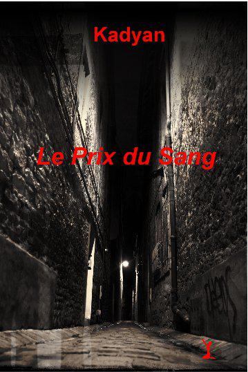

Le Prix du Sang

Pour MP, et sa présence apaisante à mes côtés,
Pour toutes les lectrices, et lecteurs, qui, ont eu la patience d'attendre la publication de ce livre.
Merci de votre patience
@ Kadyan 2012
email : mma@kadyan.fr – site : www.kadyan.fr
Touts droits réservés
ISBN : 978-1-4717-5294-0
Chapitre un
Devant la porte, la main dans la poche avant de mon jean délavé par le temps, j’hésite. Mes doigts frôlent une nouvelle fois la clé de l’appartement. Après un dernier doute, je serre les doigts sur le métal froid que je retire brutalement de ma poche. Malgré le couloir sombre, la clé brille faiblement dans la paume de ma main. Mes jambes sont en plomb, la salive a déserté ma bouche, l’incertitude qui m’habite paralyse mes gestes. Pour gagner du temps, je regarde autour de moi.
Des graffitis ont été ajoutés sur les murs jaunis du couloir depuis la dernière fois ; pas plus intelligents que les précédents. Comme d’habitude, la majorité des ampoules ne fonctionnent pas et celle devant la porte de notre appartement ne fait pas exception. La porte doit porter une ou deux inscriptions supplémentaires peut-être, des insultes pour changer. Qu’espérer d’autre dans cet immeuble pourri de ce quartier de banlieue pauvre ? Il ressemble tant aux autres immeubles que j’ai habités au fil des années, qu’à chaque fois je n’ai pas l’impression de déménager.
Dois-je sonner ou entrer avec ma clé ? Et si elle n’était pas là ? Et si elle n’était pas seule ? Si elle avait déménagé… Avec quel argent, Alex ? Six mois que je suis partie sans un mot, sans donner de nouvelles. Six mois…sans envoyer un sou. Elle ne me pardonnera jamais cette dernière escapade ! J’avais promis, juré sur sa tête… et j’ai été incapable de tenir cette promesse…une fois de plus.
Je me sens tellement coupable de l’avoir laissée en plan mais j’étais si mal, j’avais si mal…j’ai toujours mal. Comme à chaque fois que je souffre, la colère commence à monter. Cette rage qui me possède depuis toutes ces années menace de faire voler en éclat ma résolution de mieux me comporter à l’avenir. Je ne la mérite pas. Peut-être devrais-je disparaître définitivement de sa vie ? Ce serait mieux pour elle, plus simple à vivre. Décide-toi, Alex ! Tu ne vas pas y passer la journée ! En plus, si elle te trouve devant la porte, tu auras l’air ridicule. Bah ! Le ridicule n’a jamais tué personne sinon je serais morte depuis longtemps. Et si ma clé ne fonctionnait plus ? Peut-être a-t-elle fait changer les serrures ? Tant que je n’essaye pas, je n’aurai pas la réponse. Je me rends compte que je temporise par peur de l’affrontement qui ne manquera pas. Envie de repartir…
Courage, Alex, tant pis s’il y a quelqu’un avec elle ! D’un geste ferme, j’introduis ma clé dans la serrure puis tourne d’un quart de tour jusqu’à entendre le clic familier. Je pousse lentement la porte qui grince. Centimètre par centimètre, j’examine l’ouverture qui s’agrandit comme si je m’attendais à ce qu’elle soit juste derrière. Personne. J’entre et referme derrière moi. Par habitude, je dépose mon petit sac à dos par terre à l’angle de la porte, ma clé sur l’armoire à chaussures bringuebalante dont une porte manque toujours. Qui l’aurait réparée ? Et avec quel argent ?
Sans bruit, j’avance vers le séjour - cuisine - chambre d’ami. Rien n’a changé en six mois. Toujours les mêmes posters accrochés aux murs qui permettent de cacher les fissures et les trous dans le plâtre. Ensemble, nous avons cherché les plus grands et les moins laids…les moins chers aussi. Nous sommes finalement tombées d’accord pour des posters de mer et de montagnes de mauvaise qualité dans la pièce principale et des posters de stars de cinéma pour la chambre – bureau. Je laisse mon regard traîner sur tous les objets familiers. Tout est propre…comme d’habitude. Pas une assiette ou un verre qui traîne dans l’évier, pas de papier par terre. Je souris pour la première fois en repensant aux bagarres que nous avons eues sur qui ferait le ménage, la vaisselle… Nous avions instauré un calendrier pour les tâches ménagères mais l’appartement n’était jamais aussi propre lorsque c’était ma semaine. Sam est une vraie fée du logis ! De qui tient-elle cette qualité ? Mystère…
Avec appréhension, je tourne doucement la poignée de porte de la chambre pour ne pas la réveiller. Un dimanche matin à 8h30, elle doit dormir profondément surtout si elle est sortie hier soir. Qui sont ses amis maintenant ? Pas des perdants, j’espère. Non, pas Sam… elle est trop sélective.
A ma grande surprise, la chambre est violemment éclairée par le soleil qui pénètre par la petite fenêtre. Le lit est vide et fait. Comme dans le séjour, tout est rangé, à sa place. Les livres sont en piles par terre, les vêtements rangés dans la penderie en tissu délavé. Sur le carton qui sert de table de nuit, une photo d’elle et de moi prise environ un an auparavant. Pour une fois que je souris sur une photo ! Pour une fois, j’étais heureuse…du moins pour quelques minutes. Les larmes me montent aux yeux. Pas de ça, Alex ! Tu n’es pas une mauviette et tu sais depuis longtemps que pleurer ne sert à rien.
Sam a dû sortir tôt ou bien elle n’est pas rentrée de la nuit. Je me rends compte que je ne sais même pas où la chercher. Je ne connais pas ses amis, je ne sais même pas si elle en a. Nous avons tellement déménagé ces dernières années pour passer de taudis en taudis dans la même ville ou autour, histoire de bouger, de calmer mon insatisfaction, mes frustrations. Je n’ai jamais réussi à tenir un travail plus de quelques mois, il faut toujours que je m’engueule avec le patron ou avec les autres employés… J’ai subi trop de vexations dans ma chienne de vie pour accepter les humiliations quotidiennes des petits chefs qui pensent que brimer leurs employés leur donne plus d’importance. Je les exècre ces Staline en puissance ! Combien de fois j’ai failli leur péter leur sale gueule de con ? Combien de fois me suis-je retenue en pensant à Sam et à ses reproches ?
Je pousse le rideau qui cache l’accès au cagibi qui sert de salle de bain. Là aussi, rien à redire, propreté parfaite malgré l’émail fendu du lavabo et la cuvette du WC sans rabat. Il y a six mois, nous avions un rabat, il a dû casser.
Sur la seule étagère du cagibi, un tube de dentifrice à moitié vide, une brosse à dent usagée, un peigne et deux tampons. A côté de la douche dont la moitié du carrelage est partie, une serviette effrangée sèche sur une chaise. Un sourire immédiatement effacé se glisse sur mes lèvres. Notre chaise au pied cassée… Elle a cédé un soir alors que j’étais perchée dessus à changer l’ampoule du séjour. Je l’avais réparée tant bien que mal mais jamais plus elle ne supporterait le poids de quelqu’un. Nous l’avions recyclée en porte-serviettes, porte vêtements.
Je sors du cagibi pour retourner dans la pièce principale. Il ne me reste qu’une seule chose à faire, attendre. Attendre et espérer qu’elle me pardonne. Si j’étais elle, je ne me pardonnerais pas. J’inspire un bon coup pour décontracter tous mes muscles crispés. Je préférerais affronter une bande de quartier au grand complet plutôt que d’affronter le regard plein de reproche que ne manquera pas de me jeter Sam.
Sans succès, je fouille dans les placards à la recherche de café avant de tomber sur un reste de Nescafé stocké dans le frigo quasiment vide. Je remplis la bouilloire cabossée et la mets à chauffer.
La question qui me hante depuis des mois revient avec encore plus de force. Comment a-t-elle survécu sans moi, sans le peu d’argent que je rapportais et qui suffisait juste à payer le loyer et de quoi manger ? J’ai peur d’imaginer à quelle extrémité Sam a été réduite par ma faute. J’avais promis… Pourvu que… Non, pas Sam. Jamais elle ne se prostituerait, elle trouverait autre chose.
Un certain temps s’écoule avant que je ne réalise que la bouilloire siffle depuis plusieurs minutes. Je verse l’eau brûlante sur le Nescafé avant d’emporter la tasse et de me percher sur le rebord de la fenêtre que j’ai ouverte pendant que l’eau chauffait. L’escalier de secours complètement rouillé passe à quelques mètres de ma position. Il faudrait sauter pour l’atteindre mais c’est jouable. J’ai fait pire ! Je pourrais l’emprunter et ne jamais revenir.
Au soleil, j’attends. Au fil des années, j’ai appris à attendre que le temps s’écoule sans penser à rien. Je suis devenue une experte à oublier le passé et à ne rien espérer de l’avenir. C’est encore plus vrai depuis la mort d’Audrey.
Le bruit d’une clé que l’on insère dans la serrure attire mon attention. Grincement suivi d’un claquement. Sam. Un cri. Elle a vu mon sac. J’entends la voix de Sam avant même de la voir apparaître dans le séjour.
— Maman ? Maman ! C’est bien toi ?
Elle s’est arrêtée dans l’encadrement de porte. Son visage reflète toutes ses émotions, incrédulité, soulagement, colère. Je me lève pour aller vers elle. Sa lèvre inférieure tremble, ses yeux s’humidifient. Les larmes coulent déjà sur ses joues lorsque ma main se pose sur son épaule. Sam se jette dans mes bras que je referme sur son dos. La culpabilité coule dans mes veines.
— Je te croyais…morte, réussit-elle à articuler entre deux sanglots. Tu n’as… nouvelles… questionné tous…personne…
Je la garde serrée contre moi tout en ravalant mes larmes. Pleurer, c’est être faible. Etre faible, c’est mourir. Je ne pleurerai pas. Même pour la mort d’Audrey, je n’ai pas pleuré. Je ne vais pas commencer maintenant malgré la boule dans ma gorge qui manque m’étouffer.
— Pourquoi ? hurle soudain Sam en se détachant violemment de moi. Tu m’avais promis, juré que tu ne partirais pas plus que deux ou trois jours à la fois. Six mois, Alex ! Pourquoi ?
Sam a reculé de plusieurs pas. Le regard qui me fixe est incendiaire. Je lutte pour stopper le tremblement de mes mains. Que lui dire ? Comment expliquer à une jeune femme de 17 ans que je ne pouvais pas rentrer ? Comment lui expliquer que pour la première fois de ma vie, j’avais enfin une véritable amie ? Que cette amie était morte dans mes bras d’une overdose et que malgré mes études non achevées de médecine, je n’avais pas pu la sauver ? Que j’étais arrivée trop tard. Comment lui faire comprendre mon besoin de fuir tous les lieux que nous avions fréquentés ensemble ? De me fuir moi-même. Incapable comme d’habitude d’exprimer la douleur tapie au fond de mon cœur, je murmure juste :
— Je suis désolée.
Coupable, j’évite son regard. Encore une fois, j’ai trahi ma fille. La seule personne qui, en définitive, compte réellement pour moi.
— Tu es désolée ? Et moi, tu ne crois pas que je suis désolée ? Désolée d’avoir dû arrêter les cours pour travailler et manger, désolée d’avoir dû mentir à mes profs, mes amis, les voisins, désolée d’avoir fait des faux pour cacher ton absence pour que les services sociaux ne s’en mêlent pas…
— Tu as arrêté l’école ?
— Juste limité mes cours à l’essentiel pour pouvoir prétendre passer l’examen et déposer mon dossier en université. Tu m’avais promis de me soutenir financièrement jusqu’à ce que j’obtienne une bourse pour l’université. Elle est où ta promesse ?
Sam tremble de colère. Je baisse la tête incapable de soutenir son regard plein de reproches. Quand je relève les yeux, la question que je me pose depuis six mois franchit mes lèvres :
— Préférerais-tu que je te laisse tranquille ? Je peux disparaître définitivement de ta vie. Je vais trouver un travail, je t’enverrai de l’argent chaque mois. Comme ça, tu n’auras plus à t’inquiéter, tu pourras vivre ta vie sans avoir une mère ratée et tu n’auras pas à avoir honte de moi devant tes amis.
Même si ces mots sont durs à prononcer, ma voix reflète le calme. Je réalise finalement que Sam est tout pour moi. Tout ce que j’ai fait dans ma vie, je l’ai fait pour elle depuis le jour où elle est née…même si je n’ai pas fait grand chose de vraiment bien.
Ma fille me regarde sans réagir. Mes paroles l’ont surprise. Si elle prononce le ‘oui’ qui va me faire si mal, je sortirai de sa vie à jamais. Dans un geste brusque, son poing va frapper le dessus de la table qui bouge dangereusement. Le bruit sourd résonne à mes oreilles.
— Tu sais ce que je veux vraiment, Alex ? Je veux que tu trouves un travail stable, je veux que tu sois là le soir quand je rentre, je veux que tu arrêtes de traîner avec des gens dangereux… Une chose est certaine, je ne veux pas que tu partes. Tu m’as comprise ?
Nouveau coup sur la table pour ponctuer ses propos. Elle est furieuse de ma proposition et, malgré moi, je me sens soulagée.
— Tu es ma mère et je t’aime, merde ! Quand vas-tu comprendre ça ?
Sam pleure. Mon cœur saigne. Je devrais la prendre dans mes bras mais n’en fait rien sinon je serai incapable de contenir mes propres larmes.
— Je suis désolée…
— Tu l’as déjà dit, hurle Sam.
Nous restons à nous regarder plantées debout au milieu de la pièce, séparées par un bon mètre. Les larmes de Sam se calment. De sa manche, elle essuie son visage. Je ne sais pas quoi dire, le déballage de sentiments n’a jamais été mon fort. Je me recule vers la fenêtre pour m’asseoir sur le rebord, dos calé contre le montant, une jambe pliée le long de mon torse. Les minutes s’écoulent en silence, ponctuées par les reniflements de ma fille. Incapable de l’aider, je regarde dehors.
— Pourquoi ne pas m’avoir parlé d’Audrey ? demande Sam un peu plus calme maintenant.
Prenant mon courage à deux mains, je me tourne vers elle. La compassion que je lis dans ses yeux me fait mal. Je serre les poings pour ne pas laisser voir mon désarroi. Comment est-elle au courant pour Audrey ?
— Je n’ai pas osé….
Je baisse les yeux devant cet aveu qui ne me ressemble pas.
— Tu n’as pas osé me dire que tu aimais une autre femme, c’est ça ? Parce que tu l’aimais, j’en suis certaine…sinon tu ne serrais pas partie lorsqu’elle est morte, pas si longtemps.
Que lui répondre ? Qu’au fond de moi, je hurle encore six mois après sa mort ? Est-ce vraiment ça, aimer ?
— Je ne sais pas si je l’aimais, elle était mon amie… J’avais confiance en elle.
Mais elle, elle n’a pas eu confiance en moi, du moins, pas assez pour me confier sa détresse, pas assez pour rester. Sam soupire, exaspérée. Elle s’installe en face de moi sur le rebord de la fenêtre. Sa main serre un instant mon avant bras.
— Tu crois que je ne sais pas que tu as couché avec Sandra pendant huit ans ?
Mes yeux qui regardaient dehors à travers le carreau sale vont se fixer sur son visage.
— Pas huit ans, sept…et ce n’était pas la même chose. Les circonstances… Sandra était ma meilleure amie à l’époque, même si je n’ai plus de nouvelles depuis longtemps. Audrey, c’était différent…
Je laisse échapper un profond soupir. De prononcer son prénom augmente les contractions de mon estomac. Combien de temps encore avant de ne plus souffrir de son départ ?
— …Audrey, je reprends avec peine, était quelqu’un de bien ; elle me faisait rire. Sam…avant elle, je n’avais jamais été aussi à l’aise avec quelqu’un…et elle est morte dans mes bras… Je n’ai rien pu faire…rien. Elle s’est donnée la mort sachant que je devais la retrouver ce soir là. Elle m’avait dit un jour que sa seule peur était de mourir et que son corps ne soit découvert que plusieurs semaines plus tard. Son timing a été parfait…
Ma voix se brise. Je détourne mon visage pour que ma fille ne voit pas les larmes qui se forment dans mes yeux et que je tente désespérément de bloquer. Je serre les dents, je ne pleurerai pas ! Je serre les poings, je ne pleurerai pas ! La question qui me hante depuis six mois revient en force. Pourquoi a-t-elle choisi de mourir dans mes bras ? Pourquoi m’infliger cette peine supplémentaire ? La trouver morte aurait déjà été suffisamment insupportable sans rajouter à la douleur de la voir partir.
— As-tu pleuré pour elle ? demande ma fille dans un souffle.
Je secoue la tête incapable de former un seul mot. La boule dans ma gorge menace une fois de plus de m’étouffer, je tente vainement de l’avaler lorsque je sens deux bras m’attirer contre elle. Je voudrais refuser. Je n’ai pas besoin de réconfort, pas besoin de pitié. Au moment où je vais me dégager de son étreinte, Sam, debout contre moi, pose son menton sur ma tête.
— Maman, murmure-t-elle, je te connais…je sais qu’en dedans tu souffres… Laisse-moi t’aider, j’en ai besoin…c’est la seule chose que je peux faire pour toi… Tu sais qu’avec moi tu n’as pas besoin d’être forte, dure et sans pitié, que je ne te trahirai pas… s’il te plaît…
La douleur dans la voix de ma fille fait sauter mes dernières barrières. Cette douleur, j’en suis responsable par mes actes, mon attitude. J’aurais tellement voulu d’une autre vie pour elle, une vie plus facile. Je tourne la tête pour me blottir au creux de son épaule. Malgré mes poings serrés à trembler, mes larmes coulent. Je voudrais les laisser aller librement mais j’ai oublié depuis longtemps comment faire.
Les minutes passent, ma fille me tient toujours serrée contre elle. Ce n’est pas son rôle de réconforter sa mère. Ne puis-je pas pour une fois être une mère digne de ce nom ? Je relâche mes bras pour commencer à me reculer.
— Ça va aller, Sam, ne t’en fais pas… Je…
J’allais dire « je te promets » mais comment pourrais-je lui promettre quelque chose maintenant qu’elle sait que je ne suis pas capable de tenir mes promesses.
— …et si nous allions manger un morceau. Une pizza, ça te dit ?
Du revers de la main, j’efface mes larmes. Sam me tend un mouchoir en papier pour que je puisse me moucher. Elle s’est assise en face de moi sur le rebord de la fenêtre.
— Si c’est toi qui payes…
Bien que fauchée, j’acquiesce. Elle esquisse un sourire. Sans rien ajouter, nous sortons de l’appartement, empruntons le couloir sombre aux murs décrépis pour nous retrouver dans une rue tout aussi décrépie. Ce quartier est vraiment minable. Heureusement que je m’y suis taillée une réputation de dure à cuire dès le début et qu’il n’y en a pas un qui oserait lever la main sur Sam ou moi par peur de me mettre en rogne.
— Personne ne t’a embêtée durant mon absence ?
Nous prenons à gauche dans une rue plus grande, plus animée. Sam m’entraîne « Chez Tony » la seule pizza potable du quartier.
— Non…mais je me suis faite le plus invisible possible.
La fraction de seconde d’hésitation après le ‘non’ me met en alerte. A creuser, mais pas maintenant. Nous entrons dans la pizzeria. Peu de client à cette heure-ci, nous n’en serons que plus tranquilles. Tony relève la tête de son journal. La reconnaissance met plusieurs secondes avant de toucher son cerveau. Immédiatement, il quitte son comptoir pour se diriger vers nous un grand sourire sur le visage.
— Alex ! Quelle surprise ! Je me demandais ce que tu devenais. Sam t’a…
Voyant Sam qui secoue la tête, Tony s’interrompt. Elle ne veut pas qu’il parle de ce qui s’est passé en six mois. Je laisse couler, il sera toujours temps que je revienne seule pour avoir plus de détails. Tony me doit un service depuis que je l’ai débarrassé des raquetteurs qui lui pourrissaient la vie. Mes pizzas et celles de Sam sont gratuites maintenant.
— Comment vont les affaires, Tony ?
— Je ne me plains pas. Avec l’ouverture du centre multisports au coin de la rue, j’ai récupéré pas mal de clients. J’ai même dû embaucher pour le service du soir, pas vrai Sam ? La petite est vraiment adorée des clients.
Sam travaille pour Tony ? Elle m’a dit qu’elle travaillait, quoi d’étonnant qu’elle se soit adressée aux personnes qui me devaient un service ! Intelligente…comme d’habitude.
— Je ne suis pas petite ! se défend Sam. Si tu continues à m’appeler ainsi, je verserai malencontreusement du café sur les pantalons des clients !
Tony sourit de plus belle. Il passe son bras autour des épaules de Sam tout en me regardant droit dans les yeux.
— Elle a du caractère, pas vrai ? On se demande de qui elle tient ?
Pas vexée par ses taquineries, je souris rapidement avant de faire un petit signe de tête en guise d’agrément. Sam adore Tony et c’est réciproque. Lorsque nous avons emménagé dans le quartier trois ans plus tôt, c’est le premier restaurant que nous nous sommes payées et dès la première rencontre, ils ont tous les deux bien accrochés. Si au début, j’étais un peu suspicieuse des intentions de Tony – Sam n’avait que 14 ans et lui 35 -, après une petite conversation en tête-à-tête avec lui, j’ai été vite rassurée. Tony m’a raconté qu’il avait une fille du même âge que Sam qu’il ne voyait jamais car son ex-femme habitait New York et avait tellement dénigré son père que sa fille refusait de le voir. Quand à Sam, Tony représentait la figure paternelle qu’elle n’avait jamais eu. S’ils pouvaient tous les deux puiser un peu de bonheur, qui étais-je pour le leur refuser ?
— Viens, Alex, allons nous installer près de la fenêtre.
— Comme d’habitude ? questionne Tony.
— On partage une végétarienne et une champignon – jambon ? propose Sam.
J’acquiesce. Ce que je mange m’importe peu pourvu que ce soit nourrissant.
— C’est parti ! Et une forestière et une minceur pour les plus belles filles du quartier, crie Tony en s’éloignant vers son comptoir.
De la chaise que j’occupe, face à la porte, je note les changements de décor, tableaux différents, nappes vertes au lieu de rouge, murs repeints…
— Il a bien restauré. Le travail te plaît ?
— Ça va, fatiguant, mais les pourboires sont corrects…surtout le soir et puis ce n’est pas loin de l’appart… Alex, je veux aller à l’Université de Californie à San Francisco pour faire médecine. J’ai constitué un dossier et, à priori, ma candidature les intéresse, j’attends juste la réponse pour une bourse complète…
Ma fille me regarde droit dans les yeux. La détermination que je lis dans ses yeux bleus si semblables aux miens me fait comprendre que cette décision est irrévocable. Je hoche la tête.
— … Viendras-tu avec moi…là-bas ?
— Travailler ici ou ailleurs… Sam… même si tu n’obtiens qu’une bourse partielle, je me débrouillerai mais tu iras à l’université… Je…je te l’ai promis.
— Si je n’obtiens qu’une bourse partielle, JE me débrouillerai… Je ne veux pas que tu fasses quelque chose d’illégal pour avoir de l’argent… et ne me dit pas que soigner les gens sans diplôme n’est pas illégal !
Je souris tristement. Elle me connaît trop et devance mes arguments avant même que je ne puisse les exposer. Au fond de moi, je sais qu’elle a raison. Si j’avais effectué mon dernier stage, j’aurais un diplôme d’urgentiste complet en poche mais ce responsable de service était un tel salaud… Peut-être à San Francisco, j’essayerai de terminer… Et puis quoi ? Travailler en hôpital avec un chef qui va me chercher des poux sur la tête ? Nah, pas pour moi !
— Tu sais que j’ai presque un diplôme de médecin urgentiste, tu chipotes juste sur les mots. Je pourrais faire des remplacements en hôpital. C’est bien payé et laisse du temps libre.
— Jusqu’à ce que tu t’accroches avec le chef de service…
— Je pourrais travailler dans une société d’informatique. Cela marcherait si je pouvais travailler depuis chez nous…
— Avec quel ordinateur ?
Nous revoilà au problème de l’argent. Si seulement j’arrivais à garder un travail plus de trois mois et encore, trois mois, c’est une éternité pour moi ! Avec mon Master en informatique, je trouve du travail facilement… que je reperds encore plus facilement. Si seulement mes chefs me laissaient en paix mais ou je ne m’entends pas avec eux ou ils ne s’entendent pas avec moi.
— Je devrais arriver à en trouver un d’occasion…
— Volé par une de tes relations plutôt…
— Et voilà les pizzas ! nous interrompt Tony en déposant nos plats devant nous. Bon appétit !
— Merci, Tony, répond Sam avec un sourire.
Merci, Tony, pour ta diversion bienvenue. Sam a le don de soulever les points délicats et embarrassants. Est-ce que c’est de ma faute si mes relations ont toujours des bonnes affaires à proposer à condition de ne pas être trop regardant sur la provenance ? J’attaque ma pizza de bon appétit.
— N’oublie pas que nous faisons moitié - moitié.
— Ok.
Les pizzas de Tony sont juste succulentes. La pâte est fine mais pas trop, le fromage est bien réparti, la proportion des ingrédients, idéale. Je me délecte en silence laissant Sam me parler de l’école et de ses projets d’étude. Une impulsion subite me fait lui demander :
— As-tu un petit ami ?
Elle m’en parle rarement mais ça ne veut pas dire qu’il n’y a personne.
— Tu sais comment c’est, Alex, ça va, ça vient… rien de sérieux.
Sam commence une argumentation comparée entre les caractéristiques de l’homme parfait et celles des hommes qu’elle rencontre. Il est certain que si elle leurs déballe sa conception de la vie en couple, ils doivent fuir à toute vitesse. Je souris tout en plaçant des ‘oui’ de temps en temps. Sam a tout pour elle mais son intelligence et ses certitudes doivent faire peur au sexe masculin. J’espère qu’elle rencontrera un gars bien un de ces jours…
— Tu as reçu une lettre d’un cabinet d’avocats. Il faut que tu les appelles.
Ai-je raté une partie de la conversation ? Un cabinet d’avocats ?
— Pardon ?
— Alex, tu n’écoutes pas ! Je disais qu’il y a 4 mois, tu as reçu une lettre d’un cabinet d’avocats de San Francisco, Donalson & Weber, je crois. J’ai appelé pour savoir de quoi il retournait mais ils m’ont dit que tu devais les contacter personnellement pour une histoire d’héritage. Sais-tu de quoi il s’agit ?
J’ouvre de grands yeux étonnés tout en secouant la tête. Un héritage ? De qui ? Certainement pas de ma famille qui m’a rayée de sa vie depuis longtemps.
— Une erreur certainement…
— Ce n’avait pas l’air d’être une erreur quand j’ai parlé avec eux. Il faut que tu les rappelles, si jamais il y a de l’argent à la clé…
Pas la peine de me faire un dessin, Sam. Même pour 100$, cela vaudrait la peine que je passe un coup de fil à quelques dollars.
— Je les appellerai demain, d’accord ? Aujourd’hui, la journée est à nous, enfin, si tu es libre.
— D’accord.
Sam est visiblement soulagée. J’aimerais tellement que ma fille ne soit pas là à compter le moindre dollar ! Je dois absolument faire l’effort de conserver mon prochain travail. Il nous faut de l’argent, Sam ne peut pas démarrer son année universitaire avec des vêtements élimés et puis, nous loger à Frisco va coûter très cher. Je verrai bien ce que ces avocats me veulent, s’il y a du fric, pas question de le laisser filer. Si ces avocats véreux veulent m’entuber, ils se casseront les dents.
— J’ai cherché le numéro de téléphone de ma grand-mère pendant ton absence. J’ai décidé de l’appeler et d’aller la voir cet été.
Je laisse échapper ma fourchette de surprise. Mes yeux rivés dans ceux de Sam, je serre les dents.
— Pas question ! Je t’ai interdit de contacter mes parents. Je ne veux pas que nous ayons à faire avec eux, c’est clair ?
Je me sens glacée. Tout le sang s’est retiré de mon visage. Lorsque l’adrénaline monte sous le choc des mots, je commence à transpirer. Nous nous affrontons du regard.
— Tu n’étais pas là, Alex ! J’ai le droit de connaître ma famille.
— Hors de question ! Point final !
Contrariée, Sam baisse le nez dans son reste de pizza. Elle sait que je ne céderai pas quelle que soit son argumentation. Si un sujet est tabou, c’est bien celui-là. Sous la table, je serre mon poing à faire trembler mon avant-bras avant de me forcer à respirer puis à relâcher la tension qui vient de m’envahir. Nous sommes déjà passé par-là cinq ans auparavant et j’avais réussi à convaincre de justesse Sam que c’était une mauvaise idée. Je ne pensais pas que l’idée la taraudait encore.
Onze heures du soir, Sam va me tuer. Je lui avais promis de ne plus m’absenter plusieurs nuits d’affilées et je viens de passer deux nuits dehors, presque trois. Comment vais-je lui expliquer ? Lui mentir en parlant de personne gravement blessée et ne pouvant pas aller à l’hôpital ? Ça ne marchera pas, la probabilité que cela arrive est trop faible et elle est trop intelligente. Je monte les escaliers quatre à quatre d’un pas léger. A cette heure-ci, peu de risque de faire une mauvaise rencontre et puis, peu de gens oserait m’affronter. Tout le monde sait qui je suis dans le quartier et pas un ne courrait le risque de se retrouver au bout de mon scalpel après avoir tenté de m’agresser.
J’ouvre la porte le plus silencieusement possible malgré le grincement habituel. Je stoppe et écoute, pas de bruit en provenance de la chambre. Sam doit déjà dormir profondément. Sans allumer le lumière, je m’avance vers la porte de la chambre. J’aime la regarder dormir, cela m’apaise. Sa présence a quelque chose de rassurant, elle stabilise mon univers en constante mutation.
Doucement je tourne la poignée puis entrouvre la porte afin de pouvoir passer une tête. Lorsque mon regard se pose sur le lit, mon cœur rate un battement puis s’emballe. Vide ! Où est Sam ? Frénétiquement je cherche à tâtons l’interrupteur. La faible lumière jaune qui jaillit de la misérable ampoule ne me calme pas. Je retourne dans le séjour et allume les deux lampes pour constater que Sam n’est pas là non plus. La salle de bain ? Je me précipite pour vérifier. Vide aussi ? Sam, où es-tu ? Il a dû lui arriver quelque chose. A l’école ? Pas a onze heures du soir ! Dans la rue ? La panique qui s’empare de moi menace de me faire hurler. Il y a longtemps que je n’ai pas éprouvé une terreur pareille. Calme-toi, Alex, plus tu vas paniquer, moins tu pourras réfléchir !
Tout en essayant de respirer calmement, je m’assois sur le bord du lit. Ce n’est qu’au bout de quelques minutes que j’aperçois des papiers par terre dans un angle et que je reconnais la chemise cartonnée dans laquelle je range tous les documents importants. Malgré mon interdiction, Sam a fouillé. Sa vengeance à mon absence. Je serre les dents avant d’aller m’agenouiller pour les rassembler. Je reconnais le certificat de naissance de Sam, les papiers de la banque, mon certificat de naissance…sur le dessus de la pile ? Je me fige. Un frisson de sueur froide parcourt mon échine. L’adresse de mes géniteurs est sur ce certificat, du moins l’adresse à l’époque de ma naissance et qui, lorsque je me suis enfuie, était toujours la même. Non, elle n’aura pas décidé d’aller là-bas… Une voix intérieure murmure que c’est certainement ce qu’elle a fait. Tu as délibérément évité ses questions sur ta famille depuis plusieurs mois et Sam possède une personnalité suffisamment aventureuse pour avoir décidé de se rendre à cette adresse à Denver.
Immédiatement, je bondis sur mes pieds pour vérifier la boîte où je laisse de l’argent liquide pour les besoins de Sam. Vide ! Je ferme les yeux sous le choc. Elle est partie là-bas. Quand ? Hier, certainement, après ma deuxième nuit dehors. Comment ? En bus…
Lorsque je descends les escaliers quatre à quatre, ce n’est plus d’un pas léger. Je cours plus que je ne marche dans le couloir pour sortir comme une fusée et enfourcher ma moto. Jamais ma vieille Harley n’ira jusqu’à Denver. Il le faudra bien pourtant, pas le choix. D’un coup sec de talon, je démarre le moteur et jaillis de la ruelle gaz à fond manquant foncer dans une poubelle. Cool, Alex, sinon tu n’arriveras pas à Denver intacte. Je dois arriver avant que… Concentre-toi sur la route pas sur ce qui pourrait arriver si Sam entre en contact avec tes…
Un coup d’œil vers le compteur m’apprend que la jauge d’essence est presque à zéro. Je jure entre mes dents avant de m’engager sur la première station service et de faire le plein.
Sans ternir compte de la limitation de vitesse, je fonce vers le nord. Si ma bécane pourrie tient, je devrais arriver à Denver au petit matin. Pourvu que j’arrive à temps ! Je fais taire la voix qui m’explique que si elle a pris un bus hier matin, elle est déjà arrivée.
Le jour se lève à peine lorsque grelottante de froid, je m’engage dans le quartier qui m’a vu grandir. Les souvenirs remontent à ma mémoire, l’église où nous allions tous les dimanches pour l’office, le petit supermarché qui vendait des caramels mous, le parc à jeux,… Instinctivement, je retrouve le chemin de ce qui a été ma maison durant les douze premières années de ma vie, la maison où j’ai été heureuse pendant dix ans avant… Arrête ça, Alex !
Rien ne bouge dans ce quartier résidentiel lorsque je passe devant la maison pour stopper un peu plus loin contre le trottoir. Avant de descendre, je vérifie attentivement le voisinage. Toujours personne. Je me souviens de la maison jaune qui fait l’angle, la vieille femme nous donnait souvent des bonbons lorsque nous allions la voir avec mes sœurs le dimanche après-midi pour jouer avec son chien. Elle doit être morte maintenant, quoique, peut-être n’était-elle pas si âgée que cela…
J’enlève mon casque que je pose sur le siège de la moto. Mes pas me dirigent vers la maison blanche avec son jardin fleuri malgré la saison. Ma mère passait tout son temps libre dans le jardin lorsque nous étions à l’école. Un coup d’œil à la boîte aux lettres pour vérifier le nom provoque une remontée de bile de mon estomac vide. « Morsen », ils habitent toujours ici.
Maintenant que tu es là, que vas-tu faire ? Sonner et demander si ta fille est ici ? Je secoue négativement la tête. Non, me retrouver face à eux…impossible, j’aurais trop envie de les massacrer ! Respire, Alex.
Une forme allongée sous les buissons en lisière du jardin attire mon attention. Mon cœur se met à battre plus rapidement, j’accélère le pas. Arrivée à quelques mètres, je pousse un soupir de soulagement. Sam ! Elle dort en boule pour lutter contre le froid. Je m’accroupis, pose ma main sur son épaule et la secoue gentiment. Je suis tellement soulagée de l’avoir trouvée que ma colère contre elle disparaît totalement. Je sais que plus tard elle reviendra et que Sam et moi aurons une discussion pénible mais, pour l’instant, je savoure le réveil de ma fille ; les deux yeux bleus qui rencontrent les miens, ses mèches sombres emmêlées de brindilles.
— Alex ?
— Lève-toi, filons d’ici.
Sam se relève mais ne semble pas vouloir me suivre. Je reviens en arrière pour l’attraper par le bras et la diriger, malgré ses contestations, vers la moto.
— Je veux rencontrer mes grands-parents, dit-elle butée. Tu refuses de parler d’eux, tu n’as même pas voulu me dire si tu avais des frères ou des sœurs. Si ça se trouve, j’ai plusieurs cousins de mon âge. J’en ai marre d’être toute seule, tu ne tiens même pas tes promesses !
Au milieu de la rue, je m’arrête pour lui faire face. Mon ton est sec lorsque je réplique :
— Sam, tu arrêtes ça immédiatement, tu vas finir par attirer l’attention de quelqu’un. Je veux que tu montes sur cette moto et tu vas y monter.
J’ai terminé en haussant le ton et en la poussant fermement vers la moto.
— Non ! hurle Sam. J’en ai marre, fiche-moi la paix ! Je sais que je ne suis qu’un poids mort pour toi, que si je n’étais pas là, cela t’arrangerait bien alors, pourquoi ne pas me laisser aller voir ma famille ?J’y serais peut-être la bienvenue…
La gifle qui résonne sur la joue de Sam nous fige toutes les deux. Jusqu’à aujourd’hui, je n’avais jamais porté la main sur elle. L’incompréhension que je lis dans ses yeux brise mon cœur.
— Je suis désolée, je ne voulais pas…Pardonne-moi, Sam. J’ai eu si peur…pour toi… Je…
Les mots ne viennent plus, la seule chose que je peux faire est d’attirer Sam dans mes bras. Sa résistance du début cède rapidement devant la sincérité de ma détresse. Un bras passé sur ses épaules, je l’entraîne vers la moto sans que, cette fois-ci, Sam n’oppose de résistance.
— Monte ! Nous devons causer toi et moi mais je pense que d’abord un petit déjeuner dans un endroit chaud s’impose. Tu es gelée et moi aussi.
Sam hoche la tête tout en essuyant les larmes de ses joues. Je lui tends mon casque.
Attablées face à face devant un petit déjeuner reconstituant, je regarde Sam boire son chocolat pendant que je sirote ma deuxième tasse de café. Les rayons du soleil qui nous inondent à travers la baie vitrée, me réchauffent suffisamment pour que j’enlève enfin mon blouson.
— Pourquoi tu ne veux pas que je les voie, Maman ?
L’innocente que je lis sur le visage de Sam me rappelle que bien que très mûre pour son âge, elle n’a que douze ans. Il est des sujets que je ne peux pas aborder avec elle, pas encore. Il faut que j’arrive à la convaincre de ne plus revenir ici mais sans lui mentir directement. Pour cela, je dois rester le plus proche de la vérité.
— J’ai deux sœurs, Sam. Cassandra a quatre ans de plus que moi et Mélinda en a deux. Je…J’ai toujours été la plus indisciplinée, la plus aventureuse, la plus intelligente aussi de nous trois. Toutes les bêtises pour lesquelles nous avons été punies ensemble étaient de ma faute. J’ai toujours eu du mal à obéir, tu vois, ça ne date pas d’hier…
Pour mon plus grand plaisir, un sourire passe sur les lèvres de Sam.
— …Un jour, certainement une fois de trop, j’ai refusé d’obéir et mon…père m’a envoyée en maison de correction pour ça. J’avais douze ans, ton âge. Ma mère ne l’en a pas empêché. A treize ans, je me suis enfuie de cette maison de correction et j’ai débarqué à Los Angeles où, un an plus tard, j’ai rencontré ton père et où, ensemble, nous avons fait toutes les bêtises possibles… Je les hais, Sam,…pour m’avoir placée dans l’antichambre de l’enfer. Même s’ils vont à la messe tous les dimanches, ils sont mauvais… Je ne veux pas qu’ils te fassent du mal… Je ne suis pas la meilleure des mères mais tout ce que j’ai fait dans ma vie, je l’ai fait pour toi, même si certaines de ces actions étaient répréhensibles aux yeux de la loi ou de la morale.
Ma voix tremble lorsque je prononce ces mots. J’ai plus parlé avec mon cœur qu’avec la raison et je dois lutter pour que la boule que j’ai dans la gorge ne se transforme pas en larmes. Je me suis jurée, voici plusieurs années, de ne plus jamais pleurer mais Sam est la seule personne qui me rend vulnérable.
— Tu n’as jamais cherché à savoir ce qu’étaient devenues tes sœurs ? Elles n’avaient rien à voir là-dedans…
Je secoue négativement la tête.
— Le jour où je me suis enfuie de la maison de correction, j’ai tiré un trait sur le passé, sur les jours heureux que j’avais pu avoir… Promets-moi de ne plus jamais t’enfuir pour venir ici, Sam.
Ma fille hésite, je comprends sa curiosité envers une famille qu’elle ne connaît pas. Lentement, elle hoche la tête. Un sourire de soulagement étire mes lèvres. Le relâchement soudain de la tension de ces dix dernières heures m’enivre presque.
— Alors, nous allons rentrer à la maison…si ma bécane réussit à nous ramener.
Dans l’après-midi, alors que Sam est occupée dans la librairie en face de chez Tony, je traverse la rue puis entre dans la pizzeria. A cette heure-ci, je suis tranquille, il n’aura pas de client ou très peu. A l’expression de mon visage, Tony sait pourquoi je suis là. Il soupire, ses épaules s’affaissent. Résigné, il quitte son comptoir puis s’approche de moi. Silencieusement, nous nous asseyons à la petite table du fond. Pour le laisser mijoter, je temporise un peu en regardant autour de moi les peintures accrochées aux murs et qui n’ont pas changées…quoique ? Une gravure représentant un gondolier à Venise a été rajoutée ; les autres croûtes un peu décolorées sont toujours là.
— Je t’écoute.
Une nouvelle fois Tony soupire, ses yeux n’osent pas rencontrer les miens, ses doigts jouent nerveusement avec une serviette en papier de la même couleur que la nappe.
— Il n’y a pas eu de problème, Alex, je me suis occupé de la petite pendant ton absence. Comme tu le sais, je lui ai même donné du travail…
Tony est trop nerveux, son bavardage trop forcé, pour qu’il n’y ait rien du tout. Que me cachent-ils tous les deux et pourquoi ?
— Arrête de tourner autour du pot, Tony. Me prends-tu pour une imbécile ? Nous nous connaissons depuis suffisamment de temps pour que tu saches que je ne bougerai pas mes fesses de ton restaurant tant que tu ne seras pas passé à table. Ne me fais pas perdre patience !
La mise en garde est clairement perceptible dans mes mots. Il ferme les yeux puis, après une longue seconde, les rouvre et cette fois-ci plonge son regard noir dans le mien.
— La bande à Vador l’a bien un peu embêtée dès qu’ils ont su que tu n’étais plus là mais elle les a remis à leur place et j’ai dit à Vador que s’il ennuyait Sam, lorsque tu rentrerais, il pourrait avoir quelques problèmes. Je n’ai pas paru l’impressionner beaucoup mais il a fini par cesser de la tracasser. J’ai appris plus tard que plusieurs personnes lui avaient confirmé la même chose. Tout le monde adore Sam dans le quartier, Alex, les habitants n’auraient pas laissé Vador lui faire du mal.
Les paroles de Tony pénètrent comme un poignard dans mon cœur, la culpabilité m’assaille une fois de plus. Je dois apprendre à ne pas fuir devant la douleur. Sam ne mérite pas cela, elle mérite tellement mieux que moi. Je prends une profonde inspiration avant de me lever. Tony resté silencieux me regarde.
— Merci, Tony.
— Que vas-tu faire ?
Je commence à marcher vers la porte. Mon cerveau envisage les différentes possibilités qui s’offrent à lui mais les rejettent l’une après l’autre. La main sur la poignée, je me retourne vers lui.
— Je ne sais pas encore, Tony. A bientôt.
En avance pour mon rendez-vous avec Sam, je me contente de faire lentement le tour du pâté de maison histoire de bien faire savoir que je suis revenue. J’ai besoin de réfléchir sur ce que Tony vient de m’apprendre. Quelques hochements de tête acquiescent mon retour, un ou deux clochards que j’ai soignés par le passé me tiennent la grappe plusieurs minutes. Lentement, je me dirige vers notre lieu de rendez-vous.
De l’autre côté du trottoir, Sam me fait signe de la rejoindre à l’angle de la rue. Ses mains sont vides, elle n’a rien acheté. Je sais qu’elle en meurt d’envie, que beaucoup de livres l’intéressent mais, elle comme moi, sommes obligées d’attendre et d’espérer que la bibliothèque municipale fera les acquisitions que nous désirons. Je crois que c’est l’endroit où nous passons le plus de temps. Sam y fait ses devoirs et j’aime la tranquillité du lieu pour lire. L’appartement est beaucoup moins confortable, il est aussi plus bruyant. De plus, beaucoup de revues sont à consulter sur place uniquement.
Un grand sourire éclaire le visage de Sam lorsque je la rejoins.
— Je t’offre un café au Starbuck Coffee, ça te dit ?
Je vais refuser en lui disant que c’est beaucoup d’argent dépensé et que cela coûterait moins cher d’acheter un pot de Nescafé mais je n’ai pas le cœur à gâcher sa joie. Si elle me le propose, c’est qu’elle a fait ses calculs. Il va falloir que je trouve rapidement un job.
— D’accord…si tu m’invites, je ne peux pas refuser.
Chapitre deux
Après une bonne nuit de sommeil, je me sens en meilleure forme. Alors que Sam, encore ensommeillée, met de l’eau à chauffer pour le café, je m’extrais du sac de couchage dans lequel j’ai dormi au pied du canapé. Il fait encore nuit mais l’immeuble donne déjà des signes d’activités. eE réalité, il n’y a jamais de calme absolu ; trop de monde, pas assez d’isolation phonique, trop de pauvreté.
L’odeur du café chatouille agréablement mes narines. Je souris à Sam qui, appuyée contre notre seul et unique placard, sa tasse à la main, me regarde replier le sac de couchage et le ranger dans sa housse plastique. Lorsque j’ai terminé, je m’approche de la tasse fumante qui m’attend sur le bord de l’évier. Une fois la tasse dans la main, j’appuie l’épaule gauche contre la porte du réfrigérateur pour mieux admirer ma fille dans son vieux tee-shirt tout détendu. Elle est très belle avec ses longs cheveux bruns et ses yeux bleus limpides comme un ciel d’été. Etonnée de la voir déjà levée, je questionne :
— Un cours matinal ?
Sam secoue la tête avant de répondre du bout des lèvres.
— La boulangerie…je fais l’ouverture à 6h30. J’irai en cours après.
Mes yeux plongent dans mon café pendant que j’encaisse ses mots. Elle ne devrait pas avoir à se lever si tôt, à sauter des cours, à devoir subvenir à ses besoins... D’une gorgée de café, je tente d’avaler ma culpabilité.
— Je vais chercher du travail…n’importe quoi…je te le promets…
Les paroles meurent sur mes lèvres sous le regard sceptique de Sam.
— Appelle plutôt les avocats pour cette histoire d’héritage, Alex.
— Je le ferai dès que l’heure sera raisonnable, ce genre de firme ne doit pas commencer trop tôt. Ne t’en fais pas, s’il y a du fric à prendre, je l’aurai.
Sam hoche la tête. Pour ça, elle me fait confiance, je ne manque jamais une occasion de me faire un peu d’argent, c’est juste avec le travail que j’ai un problème ou plutôt les personnes avec ou pour qui je travaille. Le travail, lui, ne me fait pas peur, si seulement…
La vue de Sam qui rince sa tasse me tire de mes pensées. Elle se dirige vers la chambre pour se préparer. Lorsqu’elle ressort cinq minutes plus tard, je n’ai pas bougé de me position contre le réfrigérateur. Sam s’approche, dépose un baiser sur ma joue.
— Je te laisse le ménage, histoire que tu retrouves les bonnes habitudes.
Son ton moqueur et ses yeux pétillants de malice font monter un léger sourire sur mon visage.
— Pas de problème, tu sais combien je m’éclate avec l’aspirateur…
Sam, toujours un sourire aux lèvres, s’éloigne vers la porte. Elle retient ses mots ? Qu’est-ce… ?
— L’aspirateur a rendu l’âme mais le balai tient la forme…
Sur ces mots ironiques, elle quitte l’appartement. Fantastique ! Le balai ! J’adore, surtout avec une moquette pourrie. Je rince ma tasse puis regarde lentement autour de moi. L’appartement n’est pas vraiment sale, le ménage attendra ce soir…ou demain. Ce matin, j’ai à faire, quelqu’un a des comptes à me rendre et je crois que je vais le tirer du lit. Vador va avoir le réveil de sa vie.
Je pose ma bière sur le dessus du téléphone puis aligne les pièces de monnaie que Tom m’a fournies sur la tablette basse avant de composer de tête le numéro qui était sur la lettre. Il est de bonne heure. Le bar est encore tranquille, la musique à un niveau encore acceptable pour téléphoner. Tout en composant le numéro, je repense à la tête de Vador lorsque je lui ai mis mon couteau sous la gorge. L’envie de plonger ma lame dans la chair tendre de son cou était très forte mais la promesse faite à moi-même quelques années auparavant, plus forte encore. Il s’en est tiré sans une égratignure mais je pense que, désormais, il évitera Sam.
— Cabinet Donalson & Weber à votre service. Que puis-je pour vous ?
Le décrochage à la deuxième sonnerie me surprend. Ou ils ne sont pas occupés ou leur standard téléphonique est très performant !
— Bonjour, madame, pourrais-je parler à monsieur Donalson, s’il vous plaît ?
— Bonjour madame, qui dois-je annoncer ?
— Alex…Alexandra Morsen. Il m’a envoyé un courrier…
Sans me laisser finir, elle me coupe.
— Un instant, je vous prie.
Bien sûr, elle, elle s’en fiche de savoir pourquoi je veux parler à Donalson ! J’ai à faire à des professionnels, pas à un petit cabinet de rien du tout. La petite musique classique étudiée pour calmer et faire patienter, joue sur mes nerfs. Je déteste être mise en attente. Mes pièces filent. Que veux dire ce courrier de la part d’un cabinet d’avocats de San Francisco ? Cette question tourne dans ma tête depuis que Sam m’a donné la lettre. Au fond de moi, je n’avais pas envie d’appeler pour ce qui doit être une erreur mais Sam ne m’aurait pas lâchée. Elle est curieuse et je dois avouer que, maintenant, moi aussi. Nous…
— Madame Morsen ? fait une voix d’homme très grave.
— Oui.
— Maître Donalson. Merci d’avoir appelé, madame Morsen, cela fait plusieurs mois que nous cherchons à vous joindre…
Reproches polis… Nous ? Qui ça, nous ?
— Excusez-moi, monsieur, mais je n’ai eu connaissance de votre lettre que cette semaine. C’est à quel sujet ?
Je ne vais pas me laisser marcher sur les pieds d’entrée de jeu. Garde tes reproches pour quelqu’un d’autre, gars !
— C’est un peu compliqué et je ne préfère pas en parler au téléphone. Pourriez-vous venir à San Francisco ?
— Non, impossible, Albuquerque est trop loin.
Où trouverai-je l’argent ? Il croit que j’ai 1000$ à claquer dans un billet d’avion ?
— Albuquerque ? Un instant, s’il vous plaît…
J’entends des pages tourner, des bruits de conversation. S’il ne se dépêche pas, je vais être à cours de pièces ! Qu’est-ce qui prend si longtemps ? Qui a bien pu me coucher sur son testament ? Mes p…géniteurs seraient-ils enfin morts ?
Un homme très brun, plutôt balaise et un brin menaçant, s’approche de moi pour me faire signe qu’il veut téléphoner et que j’ai assez monopolisé le téléphone du bar. Avant même qu’il ne tende le bras pour couper ma conversation, d’un mouvement du poignet, mon cran d’arrêt est dans ma main et le couteau sous la gorge de l’homme. Le regard mauvais que je lui lance suffit à prouver que je ne bluffe pas. Lentement, les mains ouvertes devant lui, il recule vers l’intérieur du bar.
— Madame Morsen ?
— Oui.
— Je peux venir à Albuquerque vendredi prochain 15 heures si vous êtes disponible. Nous avons une succursale là-bas et je dois de toute façon m’y rendre ce mois-ci. Cet arrangement vous convient-il ?
— Oui, mais êtes-vous certain qu’il n’y a pas erreur sur la personne ?
Il veut venir jusqu’ici me rencontrer ! Je n’y crois pas.
— Vous êtes bien Alexandra Carol Morsen née à Denver le 15 avril 1969 ?
— Oui.
— Alors pas d’erreur sur la personne. Auriez-vous un numéro de téléphone où je pourrais vous joindre en cas d’empêchement ?
— Non.
— Je suppose que cela n’a pas vraiment d’importance, constate la voix dégoûtée. Avez-vous de quoi noter l’adresse ?
— Je vous écoute.
Donalson me donne l’adresse que je grave dans ma mémoire. Pas besoin de noter, je ne note jamais rien, ma mémoire suffit. Sur les salutations d’usage, je raccroche et ne suis pas plus avancée qu’en composant le numéro quelques minutes plus tôt ! La frustration m’envahit. Qu’est-ce que c’est que cette histoire ? La seule chose certaine est qu’il n’y a pas erreur sur la personne.
Mue par l’habitude, je rentre la lame de mon couteau puis le glisse dans l’étui que je porte à l’avant bras droit. Il est devenu une extension de moi-même au fil des années, très dissuasif pour les gens insistants. Les flics pourraient me faire des ennuis si j’étais arrêté avec mais je m’en moque, ils ont d’autres chats à fouetter. Ricanant, je repense à la petite conversation qui vient d’avoir lieu. Je ne pense pas que Donalson soit du genre à apprécier mon compagnon silencieux. J’attrape ma bière dont la mousse a disparu. La gorgée que j’avale me fait grimacer, plus très fraîche… Pourquoi suis-je persuadée que Donalson va me prendre de haut ? J’ai cru qu’il allait faire une attaque quand j’ai refusé de lui donner mon numéro de téléphone. Il a dû croire que je n’avais pas assez confiance en lui pour le lui confier. Pas que j’ai confiance mais nous n’avons plus de téléphone. Coupé ! Comme elle ne pouvait pas payer, Sam a préféré faire fermer la ligne. Bien d’elle, ça ! Honnête de prendre la peine de demander de clôturer la ligne plutôt que d’attendre d’être en litige pour défaut de paiement… J’aurais choisi le litige, histoire d’embêter la compagnie de téléphone.
— Hé, Tom ! Sers-moi une autre bière, celle-là est tiède.
Je récupère les pièces restantes puis vais m’installer sur un tabouret haut, adossée au comptoir. Ne jamais tourner le dos à l’entrée, c’est une règle élémentaire de survie.
— Voilà, Doc.
Je jette un dollar sur le comptoir.
— C’est la maison qui régale…merci d’éviter d’effrayer les clients payants, ajoute-t-il à voix basse.
Tom fait allusion au balaise. Je pourrais argumenter sur le fait qu’il m’a cherchée mais l’envie m’en manque. La bière gratuite est la bienvenue, je récupère mon dollar.
— Tu as appelé ? est la première chose que me demande Sam en rentrant du collège.
Sans répondre, je la regarde, mon visage de joueuse de poker en place. Elle a tellement insisté pour que j’appelle que j’ai envie de la faire mariner un peu. Jouant l’innocente, je réponds :
— Appelé qui ?
— Alex ! Tu sais bien de quoi je veux parler, du testament ! s’exclame Sam, visiblement exaspérée.
— Oh, ça !
L’éclair de moquerie dans mes yeux a dû me trahir puisque Sam se jette soudain contre moi pour essayer de me chatouiller.
— C’est pas sympa de te moquer. Alors, qu’est-ce qu’ils ont dit ?
— J’ai rendez-vous vendredi à 15 heures dans une des succursales qu’ils ont ici. N’en demande pas plus, je n’en sais pas plus. Ce Donalson n’a rien voulu me dire au téléphone. Tu devras patienter jusqu’à vendredi soir…vas-tu pouvoir résister ?
Je me moque gentiment. Sam soupire tout en me jetant un regard suspicieux. Je lui souris. Elle est si adulte lorsqu’elle me regarde ainsi et à la fois si enfant dans ses enthousiasmes. Aurais-je été ainsi à son âge si les choses s’étaient passées autrement ? Tient-elle plus de moi ou de son père ? Diablo était impatient lui aussi.
***
Tout en poussant l’unique porte vitrée de ce 21ème étage, je contrôle une nouvelle fois que le nom gravé sur la porte correspond bien à celui que m’a donné Donalson. Cabinet Denis, Strevor & Chan, pas de doute, c’est bien ici. Un bref coup d’œil me permet de constater que les locaux sont luxueux et que ce cabinet d’avocats est certainement prospère. Existe-t-il des avocats sans le sou ? La personne de l’accueil me sourit malgré la désapprobation qui se lit dans ses yeux lorsqu’elle détaille ma tenue. J’ai pourtant mis le jean le moins usé que j’ai et mon blouson en jean en parti fermé cache le tee-shirt élimé que je porte en dessous.
— Madame ? questionne-t-elle sur un ton un rien condescendant.
Je ne corresponds visiblement pas à sa clientèle habituelle.
— J’ai rendez-vous avec Monsieur Donalson à 15 heures.
— Vous êtes madame…
— Morsen, Alexandra Morsen.
L’hôtesse d’accueil consulte l’écran son ordinateur. Mon rendez-vous doit y être noté puisque cette fois-ci, elle s’adresse à moi avec une voix normale et un grand sourire.
— Si vous voulez bien patienter quelques instants, Maître Donalson va vous recevoir.
Elle me désigne les fauteuils en cuir de l’alcôve d’attente. Je m’installe pour goûter immédiatement au confort. Quelques revues de business traînent dans un désordre organisé sur la table basse. La plante verte de l’angle ajoute à l’impression chaleureuse de l’alcôve, sans parler de l’éclairage tamisé qui prête à la somnolence. Tout sent l’argent à plein nez. Ils veulent en mettre plein la vue.
Qu’est-ce que je fais là ? Je ne suis pas à ma place. Et si je partais ? Et Sam, à ton avis, elle dirait quoi si tu lui expliquais que tu es partie avant de savoir combien de fric est à la clé ? Il doit y avoir un bon paquet de dollars pour que Donalson soit venu me voir jusqu’ici. Ce genre de bonhomme n’est d’habitude conciliant qu’avec le fric et avec son pourcentage.
— Madame Morsen ?
Mes yeux se dirigent de la revue que je fixais sans voir à la voix qui a interrompu mes pensées.
— Peter Donalson. Je suis heureux de faire votre connaissance. Si vous voulez bien m’accompagner…
Je me lève et serre la main tendue. Le sourire que m’adresse cet avocat semble sincère. Une première ! Un avocat sincère ? Tout en me dirigeant vers la porte qu’il me désigne, je garde le silence. Cela vaut toujours mieux avec un avocat…plus prudent.
Le bureau où je pénètre est magnifique avec sa décoration tout en jaune clair et vert mousse qui s’harmonise parfaitement avec les éléments en bois. L’immense baie vitrée qui couvre entièrement un mur du sol au plafond offre une vue imprenable sur le centre d’Albuquerque.
— Impressionnant, n’est-ce pas ?
J’acquiesce faiblement tout en m’installant dans le fauteuil désigné. Pas question de lui montrer à quel point je suis mal à l’aise et impressionnée. Donalson contourne le bureau pour s’asseoir derrière. Il sourit toujours, ce que je commence à trouver agaçant.
— Madame Morsen, pourrais-je avoir une pièce d’identité, s’il vous plaît ?
Je le regarde suspicieusement.
— …uniquement pour être certain que vous êtes la personne que je cherche, ajoute-t-il devant mon hésitation.
De mauvaise grâce, j’extrais mon portefeuille de la poche arrière de mon jean avant d’en sortir mon permis de conduire que je tends à Donalson. Il l’examine tout en le comparant avec ce qui est écrit sur la première page d’un dossier ouvert. Satisfait, il me le rend.
— Madame Morsen, je suis l’exécuteur testamentaire d’Audrey Garrison. Elle vous a désignée comme son unique héritière.
— Audrey ? Audrey a laissé un testament en ma faveur ?
— Audrey Garrison est décédée le…
L’étonnement de ce que je viens d’apprendre me fait complètement baisser ma garde.
— 11 novembre 2003, je le coupe sèchement. Je sais, elle est morte dans mes bras. J’ai fait le 911 mais elle était morte lorsqu’ils sont arrivés…je n’ai rien pu faire.
Mes aveux le surprennent. Donalson m’évalue avec un regard nouveau. Je serre les poings pour contrôler la douleur qui m’envahit. Mes yeux fixent une sculpture en forme de poire posée sur le bureau. Je me force à me détendre et à regarder Donalson. Je suis mortifiée de mettre dévoilée ainsi. La tristesse que je lis sur son visage me surprend.
— J’étais un ami du père d’Audrey, m’explique-t-il sans que je le demande. Je l’ai vue grandir… Deux mois avant sa mort, elle est venue à San Francisco pour changer son testament et me demander de vous aider au maximum pour le cas où vous hériteriez. Je crois qu’elle savait qu’elle allait…mourir.
Sur la fin, la voix de Donalson a déraillé. Visiblement, il aimait beaucoup Audrey. Un ami de la famille a-t-il dit, Audrey n’en a jamais parlé. Il faut dire qu’elle ne parlait jamais de ses origines et que je ne l’ai jamais questionnée.
— Pourquoi vous a-t-elle demandé de m’aider ?
— Je ne sais pas mais elle devait penser que ses cousins contesteraient le testament et que vous auriez besoin d’être conseillée pour gérer vos intérêts.
— Je n’ai pas besoin d’aide pour dépenser de l’argent !
Ma voix est dure, mon ton glacial. Pour qui se prend-il ? En quoi ça le regarde ? Intérieurement, je fulmine. Remplace la douleur par la colère, c’est moins douloureux…
— Pour le dépenser, non, mais gérer un capital de 500 millions de dollars lorsqu’on n’en a pas l’habitude peut poser quelques petits problèmes…au début, dit-il en souriant.
J’ouvre de grands yeux. 500 millions…de dollars…
— Vous plaisantez !
— Jamais lorsqu’il s’agit d’argent, confirme-t-il sérieux.
— Comment… ?
Sans soupirer, sans même adopter un ton paternaliste, Donalson commence à m’expliquer :
— Le grand-père d’Audrey et ses deux fils ont investi sagement dans plusieurs sociétés. La Fondation Garrison, en plus de promouvoir des projets prometteurs, gère l’ensemble des biens de la famille Garrison. Le père d’Audrey s’étant investi beaucoup plus que son frère dans les affaires, la Fondation vous appartient maintenant à 55 %. Inutile de vous dire que les cousins d’Audrey ne voient pas votre arrivée d’un bon œil mais comme le testament est légalement inattaquable, c’est du moins ce que je leur ai fait comprendre, ils devront faire avec. Ils peuvent, par contre, vous mettre des bâtons dans les roues quant à la gestion de la Fondation.
Il faut que je réfléchisse ! 500 millions, une fondation avec des parts dans plusieurs sociétés, des employés... Audrey…pourquoi ?
— Puis-je rester seule quelques minutes, je dois…réfléchir.
Je commence à me lever lorsque Donalson, attrapant des dossiers posés sur un coin du bureau, se lève rapidement. Comprenant qu’il va sortir, je me laisse tomber lourdement dans le fauteuil.
— C’est compréhensible. J’ai des coups de fils à passer. Je vous laisse. Prenez votre temps.
La porte se referme silencieusement. Je suis étonnée que ce soit lui qui s’en aille et qu’il m’autorise à rester dans son bureau. Je m’attendais à ce qu’il me dise de passer dans la zone d’attente. Pourquoi est-il si courtois ? D’habitude, les gens comme lui ne sont pas aussi conciliants avec les gens comme moi… L’argent ! 500 millions de dollars qui m’appartiennent et qui font maintenant de moi une personne qui compte. Mais, bien sûr ! La réalisation m’atteint de plein fouet. Je me penche en avant pour poser mon visage dans mes mains. Ma douce et gentille Audrey avec son regard un peu perdu et son sourire charmeur. Pour la première fois depuis sa mort, je laisse les meilleurs souvenirs remonter à ma mémoire. La première fois que je l’ai vue allongée et grelottante sur le lit du centre d’accueil, cette femme enfant a touché mon cœur, j’ai voulu calmer sa détresse, l’aider. Combien de fois ai-je tentée de la convaincre d’aller dans un centre pour se désintoxiquer ? Dix fois, cent fois ? Chacun de ses refus me faisait mal et je partais en claquant la porte pour mieux revenir quelques heures plus tard tenter une nouvelle fois d’arrêter la spirale mortelle dans laquelle elle s’était enfermée. Au fil des mois, je l’ai vu perdre du poids, se flétrir, sans jamais pouvoir rien faire sauf être présente à ses côtés pour atténuer ses peurs lorsque les effets de la drogue cessaient. Je serre les dents. Une onde de colère brûle mes entrailles. C’est cet argent qui a tué Audrey, sans lui, elle n’aurait jamais eu les moyens de consommer autant de drogue ! Non, c’est faux, même sans argent, elle se serait procurée de la drogue, quitte à se prostituer comme beaucoup le font. Elle n’a juste pas eu à en arriver là.
Petit à petit, la colère cède la place à la tristesse. Je me masse doucement les tempes avant de redresser la tête et de me lever pour regarder le paysage. Drôle de cadeau que tu me fais là, Audrey ! Pourquoi ? La réponse me parvient immédiatement. Parce qu’un jour où nous discutions, je lui ai dit que si j’avais beaucoup d’argent je m’en servirais à réparer les injustices, à faire en sorte que ceux qui comme moi n’ont pas eu de chance s’en voit offrir une.
Est-ce pour cela que tu m’as tout laissé, Audrey ? Tu dois bien rire de là-haut, si là-haut existe, à regarder la tête de tes cousins. Penses-tu que j’ai suffisamment de force, de courage pour affronter un milieu qui va me renier, faire tout pour que j’échoue ? Les riches ne peuvent pas être plus dangereux que les gangs…quoique…dans un style plus hypocrite, peut-être…
Regarde le positif des choses, Alex. Sam sera contente, elle pourra faire médecine sans s’inquiéter d’une bourse ou de travailler. Je vais pouvoir racheter une moto… Comment gérer cette fortune et ne pas me faire avoir ? Puis-je faire confiance à Donalson ? Ai-je vraiment le choix ? Je soupire puis ma décision prise, je me dirige vers la porte du bureau. Je n’ai pas fait trois pas dans le couloir que Donalson, un café à la main, apparaît sur ma droite comme par enchantement. Il devait attendre.
— Café ? demande-t-il.
— S’il vous plaît.
C’est intéressant de voir que mon éducation, que je croyais enfouie sous 20 ans de misère, revient au grand galop chaque fois que j’en ai besoin.
— Sucre ? Lait ?
— Un sucre, pas de lait, merci.
Le café qu’il me tend est parfait, bonne qualité, pas le Nescafé que nous buvons, Sam et moi, depuis plusieurs années. D’un geste du bras, il m’indique la porte du bureau. Il a raison, c’est plus intime et la discussion n’est certainement pas finie. Une fois retourné derrière son bureau, Donalson m’observe attentivement. Je pourrais attendre qu’il formule ce qui le gêne mais l’envie de retrouver Sam et de lui annoncer la nouvelle se fait très pressante.
— Un problème ?
— Non, mais je voudrais vous mettre en garde, répond-il en sortant plusieurs feuilles du dossier posé sur le bureau. Dès que vous aurez signé ces feuillets, vous serez légalement propriétaire de tous les biens d’Audrey Garrison et les sollicitations pour de l’argent seront continuelles. Vous ne pouvez pas imaginer ce que certaines personnes sont prêtes à faire pour quelques dollars. Je sais que c’est un peu tôt pour vous demander ça mais comment envisagez-vous les choses ?
Je prends mon temps pour répondre. Je sais très bien ce que les gens sont prêts à faire pour quelques dollars. Mon cerveau tourne à toute vitesse.
— D’abord, j’aimerais avoir la liste des possessions, des actions, des parts…tout ce qui est à moi avec le montant de ce que chaque chose représente, histoire de me faire une idée de ce qui m’appartient. Ensuite j’aviserai.
Donalson hoche la tête. Ses yeux n’ont pas un seul instant quitté les miens.
— Ma fille doit entrer à l’université en septembre prochain, elle est ma priorité. D’ici là, je dois trouver un logement à San Francisco. De combien d’argent liquide puis-je disposer immédiatement ?
Le sourire qui s’était ébauché sur les lèvres de Donalson, s’agrandit. Il découvre que je suis une femme pratique.
— Environ 500 000 dollars mais vous possédez une maison dans la banlieue chic de San Francisco estimée avec son contenu à 6,4 millions de dollars…
Mon souffle se bloque dans ma poitrine et je dois faire un effort monumental pour me remettre à respirer. J’ai une maison… à San Francisco…
— Pour ce qui est de l’ensemble de vos possessions, le mieux est que vous rencontriez Andrew Challen, votre administrateur de bien qui est aussi le directeur de la Fondation Garrison depuis qu’Audrey lui a donné les pleins pouvoirs pour agir en son nom. Il pourra répondre à toutes vos questions. Dans ce dossier, vous trouverez toutes les informations nécessaires pour le contacter ainsi que la liste de toutes vos propriétés…
Donalson me tend un dossier rose qui jure avec les couleurs de la pièce. Je m’en empare.
— …mais d’abord, j’ai besoin que vous signiez tous ces papiers qui feront de vous la propriétaire officielle des biens d’Audrey Garrison.
Il pose les papiers devant moi avec un stylo par-dessus. Je m’en empare. Soigneusement, je lis une par une les feuilles avant de les signer puis de les rendre à Donalson. Il me sourit.
— Tout est à vous…
— Je désire faire un testament en faveur de ma fille, Samantha.
— Maintenant ?
J’acquiesce.
— Vous avez raison, on n’est jamais trop prudent. Je vous propose pour l’instant de faire simple, vous pourrez toujours le changer plus tard.
Du bout de l’index, Donalson enclenche l’interphone pour demander à la secrétaire d’apporter un testament pré rédigé.
En quelques minutes, j’ai complété les blancs du testament avant de le remettre à Donalson. Tout en me souhaitant un agréable retour, Donalson m’accompagne jusqu’à la porte vitrée où il me donne les dernières recommandations d’usage avant de me proposer de contacter de ma part Andrew Challen. J’accepte puis sur une dernière poignée de main monte dans l’ascenseur.
***
— Répète !
— Tu m’as bien entendue…500 millions !
Ma fille me regarde avec de grands yeux. Combien ? est une des premières questions qu’elle m’a posée en rentrant du collège après que je lui ai expliqué qu’Audrey m’avait couchée sur son testament. Ma réponse la laisse sans voix. Moi aussi, j’ai du mal à appréhender cette somme. La seule chose que je sais, c’est que nous sommes riches.
— Ouaou !
— J’ai pensé la même chose.
— Savais-tu qu’Audrey avait autant d’argent ?
Je secoue la tête. Comment aurais-je pu savoir vu qu’elle refusait de parler de son passé ? Nous nous ressemblions pour ça…
— Je voyais bien qu’elle pouvait se payer ses doses d’héroïne sans problème mais je la soupçonnais davantage de faire la call girl de luxe. Nous nous sommes plusieurs fois disputées à ce sujet. Il arrivait qu’elle disparaisse plusieurs jours de suite et je croyais qu’elle louait son corps à des hommes pour se faire de l’argent. Elle avait beau démentir et me dire que le sexe ne l’intéressait pas vraiment, je ne la croyais pas. Je lui en ai voulu de me mentir sans jamais me rendre compte que la drogue était son unique intérêt. Pour moi, les jours où elle disparaissait, elle allait juste chercher de l’argent ou autre chose afin de se payer encore plus de drogue. J’aurais dû voir plus loin que le bout de mon nez.
Au bout d’un moment, je m’aperçois que je me parle à moi-même. Je redresse la tête pour voir le regard surpris de Sam posé sur moi. Instantanément, je passe en revue mes paroles. J’en ai dit plus que ce que je voulais.
— Tu n’as jamais fait l’amour avec elle ? Je croyais…
— Elle disait qu’elle m’aimait mais cela n’a jamais été plus loin, j’avoue à voix basse. Je n’ai jamais insisté. Je ne sais même pas si je l’ai désirée. Jour après jour, je l’ai vu s’enfoncer… il ne me reste même pas de souvenir autre que celui de la drogue. Sam, je ne suis même pas sûre d’être lesbienne…je sais que c’est ce que tu crois mais je n’en suis pas certaine.
Sam baisse les yeux, gênée pour une fois par mes aveux inhabituels et le ton incertain de ma voix.
— Ça fait beaucoup d’argent…, murmure-t-elle. Notre vie va changer.
Merci, Sam, de changer de conversation. Mes yeux doivent exprimer ma gratitude car, immédiatement, ceux de Sam pétillent de joie. En principe, elle adore m’embarrasser et elle connaît, par expérience, les sujets qui me mettent le plus sur la sellette…comme l’amour, l’amitié. Personne d’autre qu’elle n’a le droit d’aborder ce type de conversation mais, aujourd’hui, elle sent que je suis vulnérable et, avec son tact habituel, n’insiste pas.
— Ouais, beaucoup. Je suppose que la question d’un emploi durant tes études ne se pose plus.
— Je suppose…ni celle d’un nouvel emploi pour toi…
Je lui souris. Plus jamais de patron ! Le patron, c’est moi désormais !
— Comment va-t-on faire et quand va-t-on avoir les sous ?
Sam, toujours si pratique.
— Donalson m’a dit qu’il contacterait un certain Andrew Challen pour régler les détails. J’ai aussi son numéro de téléphone, je l’appellerai demain. En attendant, ce soir, je t’invite au restaurant du coin avec les quelques dollars qu’il me reste.
Le sourire quitte le visage de Sam avant qu’elle ne réponde tristement :
— Désolée mais, ce soir, j’ai un rendez-vous. C’est mon seul jour de repos et Gary m’a invitée pour un cinéma en plein air. C’est trop tard pour décommander, il me prend dans une demi-heure.
Sam paraît réellement désolée. Je lui souris pour la rassurer.
— Pas de problème, Sam. Tu ne pouvais pas savoir... Profite de ta soirée.
Je meurs d’envie du lui demander qui est Gary, quel est son métier, est-ce un garçon bien, est-elle amoureuse de lui,... mais je n’ose pas, après tout je suis la première à râler ou à me refermer sur moi-même lorsqu’elle me fait la même chose.
— Que vas-tu faire ? Tu sors aussi ?
— Je ne crois pas, non. Il faut que je réfléchisse à tout ça, que j’étudie les dossiers et une soirée tranquille ne me fera pas mal.
Un coup d’œil à l’extérieur me confirme que la nuit est tombée. Sans me presser, je passe du bord de la fenêtre au canapé défoncé pendant que Sam s’affaire dans la chambre pour se préparer.
La seule fois où j’ai osé aborder le sujet du sexe avec elle, c’est en lui disant de faire attention de ne pas tomber enceinte car je ne pouvais pas assumer la charge d’une autre bouche à nourrir. Du haut de ses quatorze ans, ma fille m’a regardé droit dans les yeux en me disant d’un air outragé : « Me prends-tu pour une imbécile ? Je ne suis plus un bébé et je connais l’usage des préservatifs et tous les risques du Sida ! » J’ai rougi, je crois. Depuis je n’ai plus rien dit, ni posé de questions sur ses divers petits amis. La seule chose que j’ai constatée, c’est qu’ils sont nombreux. Je la soupçonne même d’avoir plusieurs garçons à la fois dans sa vie mais aucun n’a jusqu’à présent touché son cœur, du moins, elle n’a rien dit. Aussi loin que je me souvienne, la seule chose constante dont elle m’ait parlé est études et réussite sociale, le reste semble secondaire. Au fond, je la comprends. Sa mère est une ratée et elle ne veut pas suivre le même chemin. Cet argent va me donner la possibilité, pour une fois, de lui servir son rêve sur un plateau.
— J’y vais, dit Sam en déposant une bise sur ma joue. A demain, je rentrerai tard.
— A demain… Hé, Sam ! Motus et bouche cousue sur l’héritage. Je n’ai pas envie d’avoir tout le quartier qui vienne frapper à la porte.
— Reçu 5 sur 5, répond-elle un sourire aux lèvres tout en me faisant un clin d’œil.
J’entends la porte se refermer et ses pas s’éloigner dans le couloir. Comme d’habitude, Sam ne m’a pas demandé d’argent. Elle sait que je n’ai pas grand chose et espère sans doute que Gary paye, ce qu’il fera sans doute s’il veut passer la nuit avec elle. Quelques fois, je me dis que c’est une forme de prostitution avant de secouer la tête et de chasser mes pensées négatives. J’ai fait bien pire… Qui suis-je pour la juger ?
Ce soir, je ne dois me consacrer qu’à une seule chose : l’héritage. Je me lève pour récupérer le dossier ainsi que quelques feuilles de brouillons et un crayon dans les affaires de Sam avant de revenir m’installer sur le canapé avec un verre d’eau. Il me faut changer plusieurs fois de position avant de trouver un trou confortable. Tout en lisant attentivement le bilan annuel de la Fondation Garrison, je jette sur le papier toutes les idées, de la plus farfelue à la plus austère, qui me passent par la tête. Mes pensées m’entraînent vers Audrey mais je refuse de me laisser aller à penser à elle, à la perte que je ressens toujours au fond de moi, aux non-dit… Le présent et le futur doivent être mes seuls buts…pour Sam.
Clac ! Hein ! Immédiatement en alerte, je me lève du canapé. Une inspiration profonde et deux battements de paupières plus loin, je suis complètement réveillée, ma main contre la poche revolver de mon jean prête à s’emparer de ma lame. Le soulagement que j’éprouve lorsque je reconnais la forme qui apparaît dans l’encadrement du salon me fait pousser un soupir. Sam…
— Je t’ai réveillé ? Désolée. Pourquoi n’as-tu pas pris le lit ?
Sam est surprise, d’habitude la première qui se couche prend le lit, l’autre le canapé ou le sol. Pour ma part, comme Sam est en principe couchée avant moi, je préfère dormir par terre plutôt que de me casser le dos sur ce maudit canapé. Je m’étire pour chasser la douleur qui vient de démarrer en bas de mon dos. Peine perdue, ça m’apprendra !
— Le sommeil m’a surprise sur le canapé. Quelle heure est-il ?
Sam consulte sa montre.
— Presque cinq heures.
J’ai dormi quatre heures d’affilées, c’est rare ! Pas la peine de penser à me recoucher maintenant. Mon estomac me rappelle que j’ai sauté le repas du soir. Je jette un œil aux feuilles gribouillées. Leur relecture me permettra d’affiner les idées que j’ai eues hier soir.
— Je vais aller acheter le petit déjeuner. Tu veux quelque chose ?
— Dormir. Ne prends rien pour moi, je mangerai le reste de céréale…sauf si tu l’as mangé hier soir.
— Non. A tout à l’heure, dors bien.
J’enfile mon blouson puis sors. L’air frais d’avril me fait du bien. A cette heure, les rues sont encore désertes. C’est une de mes heures préférées, l’heure ou, en général, tout est tranquille ; les dealers et autres voyous dorment après une nuit d’activité et les bons citoyens ne sont pas encore levés. Sait-on jamais, je reste quand même sur mes gardes. Lorsque j’atteins l’avenue, seules les enseignes ouvertes 7/24 luisent dans la nuit. Je n’ai plus beaucoup d’argent mais suffisamment pour me payer un café et un beignet. Pourquoi n’ai-je pas pensé à demander une avance à Donalson ? Après tout, si j’ai tant d’argent que ça, il aurait pu m’avancer 1000 ou 2000$ sans problème. Je soupire. Certaines des idées que j’ai jetées sur le papier sont bonnes, il faudra que j’en parle à Sam avant de rencontrer ce Challen.
Sans avoir fait de mauvaise rencontre, je pousse la porte du MacDo avant de ricaner silencieusement. Mauvaises rencontres ? Dans mon quartier ? Qui oserait me chercher noise à part un alcoolique complètement bourré ? Je dois trouver de l’argent. Voyons, réfléchissons… Il doit bien y avoir quelqu’un qui a besoin de mes services mais qui ne le sait pas encore… il me suffit de trouver qui.
Chapitre trois
Déjà 16h30 ! Je suis furieuse. Il m’a fallu presque toute la journée pour récupérer 100 malheureux dollars et encore, heureusement qu’un des gars de la bande à Vador s’est fait blesser au couteau dans la nuit, sinon je serais revenue avec que dalle ! Impossible de trouver le moindre petit boulot ici ; ma réputation me précède. J’ai bien vu les regards fuyants même lorsque je ne demandais que des jobs de manutention ! Aucun d’eux ne me fait suffisamment confiance. Que croient-ils ? Que je vais les voler ou les assassiner s’ils me donnent un travail ? Quels imbéciles ! Je n’ose pas demander à Tony, il emploie déjà Sam et puis, un refus de sa part me ferait plus de mal que ce que je veux bien admettre.
Silencieusement, je grimpe les marches tout en vérifiant qu’aucune forme n’est écroulée dessus. L’ascenseur n’a jamais fonctionné depuis que nous sommes installées ici et il m’est souvent arrivé de tomber sur un clochard ou un drogué complètement stone dans la cage d’escalier. Tous les habitants de l’immeuble se méfient, pas qu’il y ait beaucoup d’argent à la clé mais les drogués sont imprévisibles lorsqu’ils sont en manque. Pour avoir travaillé bénévolement avec eux dans l’association locale, je suis bien placée pour le savoir. Dans ma chienne de vie, j’ai du récupérer plus de bleus par des drogués en manque que lors de combats de rue.
A peine engagée dans mon couloir sombre puisqu’il manque une ampoule sur trois, je distingue une forme debout à peu près au niveau de ma porte. Sans bruit, je stoppe pour l’observer. La forme, qui paraît masculine, frappe à ma porte plusieurs fois avant de jeter des regards nerveux à droite puis à gauche. A moment où il va frapper à nouveau, il tourne brusquement la tête vers moi. Malgré mon immobilisme, sa vision périphérique lui a transmis l’information d’une présence. Sa main reste comme suspendue dans l’air. Lentement, sans quitter de vue ses mains, je me rapproche. A cinq mètres de lui, je m’arrête pour mieux le détailler. De là où je me trouve, j’entends sa respiration saccadée et vois la transpiration perler à son front. Il ne fait pourtant pas si chaud, la peur le fait transpirer. La lumière dans ses yeux clairs change lorsqu’il s’aperçoit que je suis une femme. Il se sent rassuré…réaction stupide. Qui est-il ? Que veut-il ? L’homme est grand, tonique, sans la bedaine de ceux qui se laissent aller passée la cinquantaine. La coupe de ses cheveux argentés est stylée. Le costard gris foncé est de bonne qualité, les chaussures noires, bien cirées, la chemise blanche, immaculée et l’attaché-case anachronique en ce lieu. Il semble échappé tout droit de Wall Street. Il est trop classe pour être un vendeur ambulant. Un démarcheur ne serait pas assez stupide pour venir traîner par ici.
— Qu’est ce que vous voulez ?
Je suis sur la défensive, prête à sortir ma lame au moindre geste suspect. Il déglutit nerveusement devant l’agressivité de mon ton. Sa cravate semble le gêner de plus en plus.
— Je m’appelle Andrew Challen. Je cherche Alexandra Morsen… Je…
Andrew Challen ? L’administrateur de biens ? Il est venu en personne ? Si vite ? Immédiatement mes manières changent.
— Auriez-vous une pièce d’identité, s’il vous plaît ?
Le ton plus avenant semble le rassurer suffisamment pour le faire agir. Sans se faire prier, Andrew coince sa mallette sur son genou, l’ouvre et s’empare de son portefeuille d’où il extrait son permis de conduire qu’il me tend. Bien sûr, quelqu’un comme lui ne garde pas son portefeuille dans sa poche arrière de pantalon pour ne pas déformer la coupe. Je me recule vers l’ampoule la plus proche pour examiner attentivement la photo avant de lui rendre son permis. Les faux papiers existent mais pour quel motif ferait-il un faux ? Je me détends un peu plus.
— Reculez-vous que j’ouvre la porte. Je suis Alex Morsen.
Sans rien dire de plus, ni m’excuser de mes manières, j’entre la première. Sam doit être sortie sinon elle aurait répondu. Je vérifie la chambre… vide. Lorsque je me retourne Andrew est debout sur le seuil de la pièce principale. A son air, je sais qu’au premier coup d’œil, il a jugé l’état de mes finances…comme si son séjour dans le couloir ne l’avait pas déjà affranchi, murmure une petite voix.
— Fermez la porte et asseyez-vous.
Je désigne le canapé. Il obtempère. Je m’installe à ma position habituelle sur le rebord de la fenêtre.
— Avez-vous une pièce d’identité ?
Le regard que je darde sur lui, le fait remuer sur le canapé, mal à l’aise. Sa demande n’est que justice pourquoi faut-il que tu prennes la mouche, Alex ? Il a ton fric alors, relax. Je me mets debout puis sors mon portefeuille de la poche arrière de mon jean pour attraper mon permis et le lui tendre. Au bout de plusieurs secondes, il hoche la tête puis me le rend. Je le replace dans mon portefeuille avant de remettre celui-ci dans ma poche et de me réinstaller sur le rebord de la fenêtre. Bras croisés sur la poitrine, je commente :
— Vous êtes un rapide.
— Peter m’a appelé hier, immédiatement après votre entretien. Cela fait plusieurs mois que l’on vous cherche. J’ai estimé que le plus tôt je prendrais contact avec vous, le mieux ce serait. Comme vous n’aviez pas de numéro de téléphone…
Je vois son regard chercher l’appareil téléphone tout en prononçant ces mots.
— Je veux que les choses soient claires entre nous, monsieur Challen, le téléphone a été coupé parce que je ne pouvais plus payer. Donalson a dû vous dire que j’étais pauvre. Je pense qu’il ne lui a pas fallu longtemps pour me cataloguer comme une minable sans le sou mais laissez moi vous dire une chose, Andrew, je suis peut-être pauvre mais loin d’être stupide alors n’essayez surtout pas de m’arnaquer sinon je vous retrouverai et là…
D’un geste du poignet, j’envoie mon couteau dans ma main droite et déploie la lame. Les yeux d’Andrew sont fixés sur ma main et la transpiration perle à nouveau sur son front. Il ne doit pas souvent se retrouver menacé par une lame de couteau.
— Personne ne veut vous arnaquer, madame Morsen, coasse-t-il rapidement tout en desserrant sa cravate. Je suis là pour vous aider et pour faire respecter les dernières volontés d’Audrey.
Je rentre la lame avant de mettre mon couteau dans la poche revolver de mon jean puis d’enlever mon blouson ainsi que le porte couteau fixé sur mon avant bras droit. Audrey ? Pas mademoiselle Garrison ? Hum, cet homme est plus qu’un simple administrateur de biens. Connaît-il…connaissait-il bien Audrey ? Sa famille ?
— Alors, nous sommes d’accord. Pour commencer, expliquez-moi votre rôle puis brossez-moi un tableau succinct de ce que je possède. J’ai examiné la liste des sociétés et le bilan annuel mais cela ne m’indique pas en détail ce qu’elles font. Monsieur Donalson m’a dit que vous me donneriez des explications. Nous rentrerons dans les détails au fur et à mesure que j’aurais des questions.
Deux heures plus tard, alors que j’entends Sam rentrer, Andrew est toujours dans ses explications. Une chose que j’ai compris rapidement, Andrew est mon employé, c’est la Fondation Garrison qui le paye, grassement d’ailleurs. Il était l’assistant personnel d’Henry Garrison, le père d’Audrey et, à la mort de son père, Audrey l’a nommé son administrateur de bien. Durant ces deux heures, je l’ai bien observé. La cinquantaine passée, bien conservé, intelligent et concis, polis mais ferme, il a l’habitude d’être obéi mais vit dans le milieu protégé de la bourgeoisie. Notre rencontre l’a perturbé pendant la première demi-heure de notre entretien, ensuite tout à ses explications, il a oublié, temporairement je présume, l’épisode du couteau.
— Hé, Alex !
Ma fille stoppe net dès qu’elle voit Andrew et attend des explications de ma part. C’est la première fois que je ramène un étranger chez moi et la surprise de Sam est légitime. Elle l’observe d’un regard sévère. Que croit-elle ? Que je l’ai ramené pour baiser ?
— Sam, laisse-moi te présenter Andrew Challen, l’administrateur de bien de la Fondation Garrison. Andrew ; ma fille Samantha. Il est en train de m’expliquer comment fonctionne la Fondation. Si tu veux te joindre à nous.
Dès les présentations effectuées, le regard de Sam devient plus cordial, un sourire éclaire même son visage maintenant qu’elle sait qu’Andrew ne représente pas des ennuis en perspective.
— Mademoiselle…, acquiesce Andrew en se levant du canapé et en tendant la main vers Sam qui s’en empare pour la serrer cordialement.
La grimace qui a échappé à Andrew lorsqu’il s’est levé me signale que le canapé a sévi. Lui aussi aura mal au dos ! Je souris presque. Le regard de reproche que me lance Sam me met mal à l’aise. Qu’est-ce que j’ai encore fait ?
— Désirez-vous boire quelque chose, Monsieur Challen ? Nous n’avons pas grand chose dans le frigo mais je peux vous offrir un café ou de l’eau, propose Sam.
Ok, d’accord, je ne suis pas la parfaite maîtresse de maison mais qui s’en soucie ?
— De l’eau, s’il vous plaît. Merci, mademoiselle.
— Sam.
Andrew acquiesce dans un sourire. Il est sous le charme. Hé, vieux cochon ! Tu n’as pas intérêt à approcher tes sales pattes de Sam. Mes yeux doivent lancer des flammes et trahir mes pensées car le regard noir que me jette immédiatement ma fille, me calme. Andrew observe nos échanges silencieux avec patience et amusement, semble-t-il. Après avoir déposé deux verres d’eau sur la caisse qui nous sert de table basse, Sam s’installe prudemment à califourchon sur la seule chaise à peu près valide.
— Quand pourrons-nous accéder à l’argent ?
Je la laisse poser ses propres questions, même très directes. Cela me donne le temps nécessaire pour faire le tri dans ce que j’ai appris. D’après le tableau brossé par Andrew, la Fondation Garrison possède une complexité difficile à appréhender pour une néophyte comme moi. Il va me falloir apprendre très vite si je ne veux pas me faire rouler par tous ces requins qui doivent naviguer à l’aise autour de tout cet argent.
— Dès que le transfert de signature aura été fait et que votre mère aura ouvert un compte en banque à…
— Nous avons déjà un compte en banque, l’interrompt Sam.
— Certainement mais, vu la complexité des investissements en jeu, je suggère que vous ouvriez un compte à la CalgarBank qui est habitué à gérer les gros comptes. La Fondation est actionnaire à 23% dans cette banque. Votre mère est l’héritière de la fortune Garrison mais il reste énormément de papiers à signer pour que ce soit effectif et qu’elle puisse gérer cette fortune comme elle l’entend. Pour cela, je vous suggère de venir, votre mère et vous, à San Francisco dès que possible.
Sam me regarde. La décision m’appartient.
— Tout dépend de tes cours…
— Je rattraperai, j’ai l’habitude, réplique Sam en haussant les épaules. Je dois juste être là mardi prochain pour l’examen de math sinon tu n’auras qu’à me faire un mot d’excuse pour le reste.
Sam sourit en me regardant d’un air sarcastique. Je fais la moue. Les mots d’excuses, elle n’a pas besoin de moi pour les faire, elle sait imiter à merveille ma signature.
— Nous pourrions venir mercredi prochain si vous nous faites une avance pour payer les billets d’avion.
Andrew me regarde curieusement puis, petit à petit, un sourire monte sur son visage. Il semble beaucoup s’amuser ce qui m’agace un peu.
— Je n’ai pas d’avance à vous faire, c’est votre argent. Désirez-vous que je fasse transférer un peu d’argent sur votre compte courant en attendant d’ouvrir l’autre compte ? Il suffit que vous me donniez la référence de votre compte et que je passe un coup de fil…
Cela paraît simple mais j’hésite. Soudain tout cet argent me semble irréel. Sam n’a apparemment pas le même problème. Elle bondit sur ses pieds pour s’emparer de notre dernier relevé bancaire qu’elle tend à Andrew. Il jette un bref coup d’œil mais a la politesse de cacher son étonnement devant le peu d’argent disponible.
— Combien voulez-vous ?
— Combien coûtent les billets d’avion ?
— Il n’y a pas que les billets à prendre en considération, madame Morsen, vous devez penser aussi à des vêtements appropriés à votre nouveau statut, plus de l’argent pour vos dépenses à San Francisco, restaurant, taxi,…un téléphone portable, vos dépenses ici, au bas mot, je dirais 10 000$ pour que vous soyez à l’aise pendant quelques jours.
— 10 000…, merde alors ! murmure Sam.
Je garde le silence. Des nouveaux vêtements appropriés…j’aurais dû y songer. La propriétaire de la Fondation Garrison ne peut pas se présenter en jean et tee-shirt élimés. 10 000 $ ? Le max que j’ai jamais eu sur mon compte, et encore pas longtemps, devait être 1500$. Je pense que nous ne sommes pas au bout de nos surprises. Je souffle doucement entre mes dents pour tenter de calmer mon tumulte intérieur. Surtout, ne pas laisser voir mes émotions, ma priorité est de me faire respecter.
— Pour le logement ?
— Vous pourriez loger chez vous, dans votre maison si vous le désirez. Je viendrai vous chercher à l’aéroport pour vous y emmener. Prévoyez de rester au moins jusqu’au week-end pour que nous puissions régler le principal, à moins que vous ne vouliez rester définitivement, c’est à vous de décider. D’ici là, j’embaucherai du personnel temporaire en plus du personnel permanent pour que la maison soit prête à votre arrivée. La maison est très belle, très bien située sur les hauteurs de Frisco. C’est un disciple de Frank Lloyd Wright qui en a conçu les plans, elle devrait vous plaire mais si vous voulez changer la décoration, je connais un architecte d’intérieur qui travaille très bien...
Heureusement que je suis assise sinon je tituberais sous le choc des mots ; 10 000 $, une maison à San Francisco, un architecte d’intérieur… j’ai du mal à réfléchir. Une bouffée de chaleur m’envahit. Andrew me regarde comme s’il attendait un commentaire de ma part mais mon cerveau refuse de fonctionner. Lit-il sur mon visage le désarroi que je tente de cacher ? Les minutes s’écoulent sans que ni Sam, ni moi, prononcions un seul mot. Andrew s’empare de son téléphone puis se lève.
— Si vous voulez bien m’excuser, je vais passer un coup de fil pour que le virement sur votre compte soit effectué dès aujourd’hui.
Je hoche la tête. Comprend-il ce que cette fortune représente pour nous ? Pendant qu’Andrew passe son coup de fil qui va nous rendre riche, Sam s’approche de moi. Ses yeux reflètent l’incrédulité.
— 10 000$, murmure-t-elle hésitante. Ce sera à nous ?
L’expression de son visage au moment où elle pose cette question lui fait paraître 10 et non plus 17 ans. Noël approche et les cadeaux sont plus beaux que tout ce qu’elle a jamais imaginé. Des larmes coulent doucement sur ses joues encore rebondies par l’enfance qu’elle vient juste de laisser derrière elle. Sam a besoin de moi, que je prenne les choses en main et, pour une fois, je ne la laisserai pas tomber. Du bout du pouce, j’essuie ses larmes avant de trouver des mots pour la rassurer.
— Ce sera à nous…et bien plus encore si nous sommes prudentes.
Doucement, elle pose sa tête sur mon épaule. Je la serre contre moi jusqu’à ce qu’un toussotement nous ramène à la réalité.
— C’est arrangé. D’ici une demi-heure, l’argent sera transféré sur votre compte.
Sam s’écarte de moi mais continue de tourner le dos à Andrew. Elle ne veut pas lui montrer ses larmes même si j’en crois ma première impression, Andrew est suffisamment bien éduqué pour faire semblant de les ignorer.
— Merci. Lorsque nous serons à San Francisco, pourriez-vous arranger un entretien avec le responsable du meilleur M.B.A de la ville ? J’essayerai de chercher sur Internet dans un cybercafé et de vous communiquer un nom mais peut-être que, dans votre entourage, quelqu’un connaît ce nom. Ce serait plus rapide.
Andrew me regarde vaguement étonné.
— Vous désirez faire un MBA à Berkeley ?
— Si je dois apprendre à gérer mes affaires, c’est ce qui me paraît le mieux pour commencer, non ?
— Oui, mais tout dépend de votre niveau d’étude. N’importe qui ne peut pas faire un MBA, madame Morsen, les études sont longues et très contraignantes.
— Si je commence maintenant, en m’y tenant 8 heures par jour, je devrais avoir terminé en septembre.
— Pardon ? Le MBA se fait en 21 mois pas en quatre mois ! s’exclame Andrew incrédule. Et encore à condition d’avoir déjà de bonnes connaissances en économie.
— J’ai obtenu une maîtrise d’informatique en un an alors que je n’étudiais que deux heures par jour, pareil pour ma maîtrise de droit criminel et j’ai complété la partie théorique des études de médecine en deux ans alors que je n’étudiais que trois heures par jour, alors faites-moi le plaisir de me croire lorsque je vous dis que je suis capable d’effectuer un MBA en quatre mois.
J’ai terminé un peu sèchement mais s’il est une chose que je déteste, c’est qu’un riche remette en question mes facultés intellectuelles. Andrew me fixe, bouche bée. Il ferme puis ouvre la bouche comme un poisson hors de l’eau avant de se racler la gorge et de retrouver sa voix.
— Vous avez tous ces diplômes et vous végétez dans un trou à rat ? C’est bien ce que vous essayez de me dire ?
J’acquiesce, incertaine de la tournure que vient de prendre la conversation. J’aurais dû tenir ma langue mais même si je n’ai rien, si je suis une minable, j’ai au moins mon intelligence.
— Je ne comprends pas, reprend-il en regardant Sam pour obtenir de l’aide.
Sam, les bras croisés sur le dossier de la chaise, me fixe d’un air de dire, réponds-lui parce que moi j’ai renoncé à comprendre.
— Il n’y a rien à comprendre, c’est ainsi !
Devant ma colère, Andrew n’insiste pas. Visiblement, ma personnalité le prend constamment à contre pied et il a du mal à me juger. Tant mieux ! Je n’ai jamais justifié mes actes devant quiconque, je ne vais pas commencer maintenant.
— Je me renseignerai. Si j’obtiens un nom, je vous prendrai rendez-vous afin que vous puissiez expliquer vos projets vous-même.
Le doute pointe tellement dans sa voix que je grimace de frustration. Un coup d’œil à Sam me montre qu’elle goûte la situation. Devant mon air furieux, elle éclate soudain de rire.
— Vous êtes fait pour vous entendre tous les deux…j’attendrai la suite du spectacle avec impatience.
— Désolée, Andrew, je ne suis pas habituée à ce que quelqu’un mette en doute mes capacités intellectuelles.
Cette concession du bout des lèvres soulage immédiatement l’atmosphère.
— C’est moi qui suis désolé. Je ferai du mieux possible pour le MBA…
Andrew se lève du canapé et porte immédiatement les mains à son dos.
— …votre canapé est un tueur. J’espère que c’est la première et dernière fois que j’ai à faire à lui…
J’esquisse un sourire.
— Bienvenu chez les défavorisés…
Andrew fait celui qui n’entend pas ma remarque. Sam et moi le regardons en silence rassembler ses papiers.
— Je dois partir, mon avion décolle à 21h30. Voici ma carte. Dès que vous aurez acheté un téléphone portable et les billets d’avion, appelez-moi pour me communiquer votre numéro et votre heure d’arrivée. A mercredi donc…
Il me tend la main mais je ne la saisis pas. Sait-on jamais ce que peut cacher l’autre main, celle qui reste dans l’ombre… Un éclair de colère brille un instant dans les yeux d’Andrew juste avant qu’il ne remette la main le long de son corps.
— Il fait nuit, je vous accompagne jusqu’à la station de taxi.
Même s’il est surpris de ma proposition, Andrew ne laisse rien paraître. Lui et Sam échangent une poignée de main, que ma fille a initié, en échangeant les politesses d’usage. Je remets mon couteau en place dans son étui puis j’enfile mon blouson.
Andrew marche silencieusement à mes côtés. Il est tendu. J’aperçois des ombres se déplacer de coin sombre en coin sombre.
— Nous sommes suivis ? questionne-t-il un ton plus haut que la normale.
— Juste observés. Relax, tant que tu es avec moi, tu ne risques rien. Je suis connue dans le quartier. Chacun son milieu…
Sans m’en apercevoir, je suis passée à un parlé plus familier. Dès que je fais un pas dans la rue, elle déteint sur moi et j’oublie mes bonnes manières. Nous rejoignons une avenue beaucoup plus fréquentée avec ses commerces et ses passants ; Andrew se détend enfin.
— Avant de nous quitter, Alex, je voudrais juste vous dire que je ferais l’impossible pour vous aider. Audrey était ma filleule et m’avait parlé de vous la dernière fois qu’elle était venue à San Francisco. Elle vous admirait beaucoup pour votre charisme et votre dévotion à l’association d’aide anti-drogue. Elle m’a confié que vous étiez la seule amie qu’elle ait jamais eu. C’était important pour elle, même si c’est arrivé trop tard pour la sauver. Pour ça, si vous l’acceptez, mon amitié vous est acquise. Je vous souhaite une bonne nuit.
Andrew commence à se détourner lorsque je l’arrête d’une main sur son avant-bras. Malgré l’émotion que je dissimule parfaitement, je pense que mes yeux me trahissent.
— Merci, Andrew. Bonne nuit, faites bon voyage.
Même s’il est surpris par la main que je lui tends, Andrew, un sourire sincère sur le visage, s’en empare avant de monter dans le premier taxi qui passe.
Seule avec mes pensées, je regarde le taxi qui emmène Andrew s’éloigner. Ma vie vient de changer radicalement durant ces quelques jours. La chance d’une vie vient de se présenter à moi et je ne la laisserai pas passer, j’en fais la promesse. Il est temps de grandir, Alex, et d’oublier le passé. Plus vite dit que fait, bien sûr, mais cela ne m’empêchera pas d’essayer. J’hésite à rentrer. J’ai besoin de réfléchir mais l’appartement ne s’y prête pas vraiment et Sam doit attendre mon retour avec impatience pour m’assaillir de questions…et de reproches. Mon estomac se contracte à cette idée. Je soupire. Si je ne rentre pas maintenant, ce ne seront plus des simples reproches que j’aurais à affronter… La proposition d’amitié d’Andrew m’a surprise. Après tout, il ne me connaît pas. De plus, je l’ai menacé avec mon couteau, cela aurait dû le rebuter. Est-il sincère ou bien a-t-il son propre agenda. Je soupire. Encore une inconnue dans mon équation déjà compliquée. Voyons ce qu’en pense Sam…
***
Je progresse d’un pas rapide pour retrouver Sam qui m’attend chez Tony. Le doux soleil d’avril baigne la rue et mon cœur de sa chaleur. Une impression de légèreté m’a envahi lorsque j’ai eu l’argent en main ce matin. Dès que je pousse la porte du restaurant et que mes yeux se posent sur Sam, je ne peux empêcher un sourire d’illuminer mon visage. Sam comprend immédiatement que j’ai récupéré l’argent à la banque et le même sourire de victoire s’affiche sur ses lèvres.
— Salut, Tony, un café !
Sans attendre la réponse de Tony, je m’installe en face de Sam.
— Tu as vraiment l’argent ? questionne Sam à voix basse pour que personne ne puisse se douter de rien.
Je hoche la tête. Nous devons avoir l’air de conspiratrices.
— J’ai même pris le temps d’acheter les billets d’avion pour Frisco. Départ mercredi matin 9h15…
La lueur d’excitation que je lis dans les yeux de Sam ajoute à ma joie. Cela fait longtemps que je ne l’ai pas vu aussi surexcitée. Il faut dire que la misère n’a rien d’excitante en soi, que se crever pour gagner quelques dollars n’a rien d’excitant non plus… mais aujourd’hui, j’ai l’impression d’être le Père Noël et je n’aurais pas cru y prendre autant de plaisir.
— …en attendant, que dirais-tu d’aller faire un tour au shopping center du centre ville ? Il semblerait qu’une nouvelle garde-robe soit nécessaire…
— Et de la lingerie, ajoute Sam. Et un téléphone portable…
Elle s’interrompt le temps que Tony dépose mon café devant moi avant de repartir vers des clients qui lui font signe. Je lui souris tout en avalant une gorgée d’expresso :
— Tout ce que tu veux, Sam.
Fameux ! J’adore le café italien. Nous aurons peut-être l’occasion d’en boire à San Francisco, je pourrais certainement acheter une machine pour notre nouvelle maison à moins qu’il n’y en ait déjà une. A quoi peut bien ressembler une maison de 6,4 millions de dollars ? Un disciple de F. L. Wrigth…il va falloir que je me renseigne sur Internet. Si j’achetais un ordinateur portable ? J’ai vu qu’il y avait des promotions pas trop chères chez Wallmart.
Sam me regarde boire mon café en silence. Elle a terminé le sien avant que j’arrive mais n’a pas voulu commander autre chose. J’avale rapidement la dernière gorgée.
— Prête ?
Le sourire éblouissant qu’elle m’offre est sa meilleure réponse. Sam se lève. Je dépose 2$ sur la table avant de la suivre dehors. Tony va en tomber à la renverse de trouver de l’argent, c’est une première ! Par cette belle fin de matinée, nous nous dirigeons vers l’arrêt de bus pour nous rendre en centre ville. Cette fois-ci, j’achèterai des tickets !
Quelle journée ! Lorsque Sam et moi, nous écroulons sur notre canapé défoncé, nous sommes mortes de fatigue. Jamais je n’aurais cru que faire les magasins pouvaient être si épuisant…surtout avec Sam. Vu le nombre de paquets que nous avions, nous nous sommes offertes le luxe de rentrer en taxi et je dois avouer que c’était bien agréable. Même la tête du chauffeur de taxi lorsque nous lui avons donné l’adresse, valait son pesant d’or.
L’épisode lingerie nous a pris un temps fou. Sam n’arrivait pas à se décider entre des sous-vêtements coordonnés blancs à dentelle ou un assortiment de culottes et de soutien-gorge à motifs amusants pour tous les jours. J’ai décidé pour elle, nous avons acheté le tout. Pour moi, je me suis fait plaisir en investissant dans des boxer-shorts en coton de plusieurs couleurs. Pas sexy au dire de Sam mais qui va les voir, en plus, ils sont confortables.
— Alex, montre ton nouveau blouson, allez !
Avec peine, je m’extrais du canapé pour sortir de son sac mon nouveau blouson en cuir huilé. Le contact est doux sous mes doigts que je laisse doucement glisser sur le col puis sur les manches. Des années que je rêvais de m’offrir un blouson pareil mais il y avait toujours d’autres priorités.
— Vas-y, essaye-le !
Sans hésiter, j’enlève mon vieux blouson en jean pour passer le nouveau.
— Super ! Il a été fait pour toi. Tu es hyper sexy avec. Tu vas tourner toutes les têtes.
— Essaye ta veste… et le pantalon.
Souriant de ma suggestion, Sam se lève pour se déshabiller. Elle ouvre presque tous les sacs pour trouver les vêtements qu’elle cherche. Après avoir enlevé les étiquettes, elle enfile le chemisier en lin écru avec un pantalon gris anthracite en laine légère et sa veste en cuir noir très souple. Habillée ainsi plus une paire de bottines noires, elle est époustouflante. Je ne vais plus oser la laisser sortir de peur qu’elle se fasse kidnapper par un roi du pétrole texan.
— Toi aussi. Il n’y a pas de raison que je fasse le mannequin et pas toi.
De bon gré, j’obtempère. Je me glisse dans un jean noir flambant neuf, des bottes basses noires avec un léger talon et un chemisier bleu turquoise à col officier. Ça me change des tee-shirts noirs ou blancs et de mes tennis défoncés !
Le regard de Sam me dit que ce qu’elle voit lui plaît. Je lui souris. Le Père Noël est aussi passé pour moi. Soudain, mon sourire s’efface.
— Tu ne crois pas que si nous nous pointons là-bas habillées de neuf des pieds à la tête, les gens vont nous regarder bizarrement ?
Sam hausse les épaules. Visiblement, elle s’en moque.
— Et tu ne crois pas que si nous nous pointons là-bas habillées avec nos vieilles affaires élimées et trouées, les gens vont nous regarder encore plus bizarrement ? me demande-t-elle sérieuse.
Je hoche la tête. Comme d’habitude, elle a raison. Tout en essayant d’être discrète, je retire lentement la petite boîte cachée dans une des poches de mon vieux blouson. C’est une surprise pour Sam qui doit le rester jusqu’au dernier moment. Je lève la tête pour vérifier que je n’ai pas été repéré. Pas d’inquiétude à avoir ! Sam est tellement occupée à s’admirer sous toutes les coutures devant le miroir à moitié brisé du placard qu’elle n’a rien remarqué. Avec une nonchalance feinte, je m’approche derrière elle. Nos regards se croisent dans le miroir alors que je tends la boîte devant moi.
— Tiens, Narcisse, une raison de plus de t’admirer !
Lorsque Sam voit la petite boîte de velours bleu nuit, elle pousse un cri étranglé avant de se retourner et de se jeter dans mes bras, les larmes aux yeux. Pour tenter d’avaler la boule d’émotions qui me serre la poitrine, je plaisante :
— Tu devrais vérifier ce que c’est avant de me remercier…ce ne sont peut-être que des morceaux de plastique.
Les bras de Sam se resserrent un peu plus sur mon dos, elle sanglote. Trop d’émotions en trop peu de temps, elle, comme moi, mais je dois être forte pour elle. Je suis l’adulte, je dois conserver la tête froide et gérer calmement la situation. Depuis le début de cette aventure, je me raccroche à cette idée pour ne pas trop penser à Audrey, ne pas trop ressentir, ne pas paniquer devant le futur qui s’offre à nous. Je dépose un baiser sur le front de Sam.
— Et si tu les essayais pour voir si ces boucles d’oreilles te vont bien…
Chapitre quatre
— Avez-vous fait bon voyage ? demande Andrew à notre arrivée.
— Très bon, répond Sam immédiatement. C’était la première fois que je prenais l’avion et j’ai trouvé le décollage très impressionnant.
Je n’ose pas avouer que c’était la première fois pour moi aussi. Andrew sourit tout en indiquant du bras une direction.
— L’arrivée des bagages est par ici.
— Nous n’avons rien mis en soute, tout est là.
Je désigne la petite valise à roulette que traîne Sam. Andrew me jette un regard surpris d’un air de dire, c’est tout ? Je le fixe d’un air sérieux. Que croyait-il ? Que nous allions dévaliser toutes les boutiques d’Albuquerque ? Sur les 10 000 $, nous n’en avons dépensé que 2345 avec les billets d’avion et l’ordinateur portable qui pend maintenant à mon épaule. Nous n’allions tout de même pas claquer tout cet argent en trois jours !
— Dans ce cas, nous pouvons y aller… Ma voiture est au parking.
Alors que nous roulons en direction de la ville dans sa BMW avec sièges en cuir beige, Andrew commence à m’expliquer le programme qu’il a prévu.
— Je vous emmène voir la maison afin que vous puissiez poser vos bagages et vous rafraîchir un brin. Comme vous êtes arrivées tôt, j’ai organisé un cocktail à la Fondation pour 16 heures. Cela vous permettra de faire connaissance de façon informelle avec les responsables d’activités et une partie du personnel. Demain matin, vous avez rendez-vous à 9 heures avec le professeur Harris responsable du MBA à Berkeley. A partir de 11h, j’ai programmé une réunion générale avec les managers de la Fondation. Vendredi, je vous ai prévu des entretiens individuels avec chaque responsable afin que chacun d’eux puisse vous brosser en détail le tableau de leur activité. Vendredi en fin d’après-midi, nous pourrons faire un debriefing au cas où il vous resterait des questions d’ordre général. Je sais qu’il vous faudra plusieurs mois pour entrer dans tous les détails mais, pour chaque problème ou questions, n’hésitez pas à me consulter. Pour samedi et dimanche, je n’ai rien prévu, j’ai pensé que vous aimeriez visiter la ville. Je peux vous servir de guide samedi mais dimanche j’ai une obligation familiale. Les parents de ma femme viennent dîner, pas que cela m’enchante mais mon absence serait trop remarquée…
J’écoute les problèmes d’Andrew avec sa belle-famille d’une oreille distraite tout en regardant le paysage. Sam a le nez contre la vitre. Depuis quelques jours, son excitation est palpable. C’est le début d’une grande aventure pour nous et j’ai peur de ne pas être à la hauteur et de tout fiche en l’air…comme d’habitude. Rien que le cocktail prévu cet après-midi me donne des sueurs froides. Allons, Alex, combien de fois as-tu lutté pour ta vie dans les bas fonds ? Cela ne doit pas être plus difficile, non ?
— Comment est la maison ? questionne Sam d’une voix impatiente.
— Elle est suffisamment spacieuse pour y vivre à sept ou huit personnes. Toute la famille vivait là à l’époque du vieux Garrison ; Audrey a grandi dans cette maison. Le terrain est assez grand et la vue sur la mer est splendide.
— On aura vu sur la mer ?
La voix incrédule de Sam me ramène à l’instant présent. C’est le moment d’étaler mes recherches sur le fameux architecte.
— Est-elle construite sur une base de cellule de ruche ? J’ai lu que c’était la spécialité de Frank L. Wright.
— Exactement. Son disciple s’est inspiré de la maison Hanna pour réaliser la maison Garrison…je suis certaine qu’elle vous plaira. Elle possède un charme que les maisons modernes n’ont plus.
Andrew continue de commenter les différents lieux où nous passons mais, ni moi, ni Sam, ne prêtons vraiment l’oreille, chacune de nous perdues dans nos pensées. Pour ma part, mes pensées sont fixées sur le cocktail prévu et l’appréhension me gagne de plus en plus. Pourvu que je ne fasse rien qui puisse m’attirer des ennuis. Andrew a dû s’apercevoir que nous ne l’écoutions pas vraiment puisque, lorsque la voiture tourne dans une rue assez raide, lui aussi est silencieux. La route semble s’arrêter à un portail blanc de bonne hauteur surmonté de pointes acérées qui, dès qu’Andrew appuie sur le contacteur d’une minuscule télécommande, s’ouvre. Le gardien posté de l’autre côté de la grille nous salue au moment où Andrew s’engage sur la route bordée d’une rangée de grands arbres. Un gardien… ? La pelouse qui s’étire derrière est superbe, parfaitement entretenue. La voiture roule encore une centaine de mètres avant de s’arrêter devant une magnifique maison en brique, bois et verre. Le terrain est immense, la maison imposante. Même celle de mes parents n’était pas aussi grande. Elle ne valait pas 6,4 millions de dollars me murmure une petite voix.
— Est-ce… ?
— Vous voici chez vous, madame Morsen.
Je jette un coup d’œil vers Sam qui reste muette de surprise. Andrew sort de la voiture. Secouant ma paralysie, je sors à mon tour puis vais ouvrir la porte de Sam qui n’a pas bougé.
— C’est chez nous ? demande-t-elle à voix basse. Vraiment chez nous ?
Elle semble perdue. Je passe mon bras derrière ses épaules et l’entraîne vers la porte ouverte où Andrew se tient, une femme d’un certain âge à ses côtés.
— Voici Maria, votre cuisinière. Elle et son mari, Diego, qui est le jardinier de la propriété, habitent dans la dépendance à l’autre bout de la propriété. Ils sont au service de la famille Garrison depuis plus de trente ans. J’ai aussi embauché temporairement deux femmes de ménage, à vous de décider si elles vous conviennent…
Maria, malgré son sourire, semble agitée. L’homme à moitié caché derrière la masse de sa femme passe d’un pied sur l’autre tout en tournant son chapeau de paille dans ses mains. Les mots que tous deux prononcent sont teintés d’un fort accent mexicain. Je leur souris avant de lancer en espagnol :
— Buenos dias, Maria, buenos dias, Diego, estoy contenta de…
Andrew me fixe surpris mais moins que Maria et Diego. Je continue un peu de conversation en espagnol avant qu’Andrew ne me fasse signe que nous ne devons pas perdre trop de temps. Au grand étonnement de Sam, une jeune femme que nous n’avions pas encore vue jusqu’ici s’empare de notre unique valise et commence à monter les marches.
— Maman…
— La bonne va installer vos affaires dans vos chambres. J’ai pris la liberté de vous attribuer une chambre chacune, vous pourrez toujours en changer, précise Andrew.
— Combien y a-t-il de chambre ?
— Cinq chambres. Vous verrez le plan est particulier et les différences de niveaux troublants au début mais vous vous y ferez vite. Un jardin intérieur a été aménagé autour de la piscine et de la salle de sport. Les dépendances et le garage sont derrière la maison ainsi que l’appartement pour les invités. J’ai fait vérifier les voitures. Trois d’entre elles sont en ordre de marche, pour la limousine, il semble qu’il y ait un petit problème, je…
— Trois voitures ?
Immédiatement, l’excitation me gagne. Personne ne m’avait parlé de voitures… Trois plus une limousine ? Je respire à fond pour calmer mes nerfs.
— Une Jaguar, une Porsche et une Mercedes. Maria vous montrera où trouver les clés. Madame Morsen, si vous voulez vous rafraîchir et manger un peu…
Je respire à fond pour cacher mon tumulte intérieur. Des voitures de sport…Diablo aurait déjà sauté dessus. Manger ? Mon estomac est tellement noué que, à part un café, je n’ai rien pu avaler depuis hier soir.
— …Nous devrons y aller bientôt si nous voulons être à l’heure pour le cocktail, les bureaux sont en plein centre et le trafic très mauvais à cette heure-ci.
— Alex, appelez-moi Alex. Je suis prête, c’est quand vous voulez, Andrew.
— Je peux rester ici ?
Les yeux de Sam sont suppliants. Ma première impulsion est de refuser mais si la maison nous appartient, autant qu’elle explore.
— Bien sûr, nous sommes chez nous, non ? Visite, tu me raconteras plus tard.
Sam, contrairement à ses habitudes, me saute au cou. Notre vie est complètement chamboulée et autant elle que moi avons besoin de contacts physiques pour nous prouver que nous ne rêvons pas.
Redescendant la colline, la voiture reprend le chemin de la ville. Au loin, j’aperçois le Golden Gate. Je souris intérieurement ; je sais où nous irons ce week-end.
— Je ne savais pas que vous parliez espagnol. Où avez-vous appris ?
— Los Angeles.
Je n’ai pas envie de m’étendre sur le temps que j’ai passé là-bas. Je regarde le profil d’Andrew. Il paraît hésiter. Ses mains serrent puis se détendent alternativement sur le volant.
— Le mieux est que vous disiez ce que vous avez à dire sinon nos relations vont être compliquées. Comme vous l’avez remarqué, ce n’est pas mon genre de tourner autour du pot. Les amis ne sont-ils pas sincères entre eux ?
Andrew soupire. N’apprécierait-il pas mon côté direct ? Je retiens un sourire. Il n’est pas au bout de ses surprises avec nous. Après tout, c’est lui qui m’a proposée son amitié.
— Madame Morsen… Alex, j’ai fait faire une enquête sur vous juste après l’ouverture du testament d’Audrey. Bien qu’Audrey m’ait un peu parlé de vous, elle n’est pas entrée dans les détails. J’avais besoin de savoir à qui j’avais à faire avant de vous rencontrer. Ce que j’ai appris, n’importe qui peut l’apprendre, y compris des journalistes où des gens moins bien intentionnés que moi… Ne vous y trompez pas, dès que je vous aurais présentée, tous vos actes, vos paroles, seront commentés, analysés et, quelques fois, inscrits dans des journaux. L’argent s’accompagne souvent de la notoriété, même non désirée, c’est le revers de la médaille.
Je commence à comprendre où il veut en venir. La colère se propage lentement dans mes veines.
— J’assume mes actes, Andrew, passés, présents et futurs. Ma vie est ce qu’elle est, il est trop tard pour la changer même si je le voulais. Je ne peux pas réécrire le passé. Ceux qui ont un problème, je les …
— Justement, je ne veux pas vous faire la leçon mais, à partir de maintenant, il serait souhaitable de surveiller votre langage et de ne plus jouer du…couteau… Je pense que vous êtes assez intelligente pour vous rendre compte qu’au moindre faux pas les cousins d’Audrey vous lapideront. La pire chose qu’il peut vous arriver dans le monde des affaires est de perdre votre crédibilité.
Andrew me jette un bref coup d’œil avant de fixer de nouveau la route. J’émets un petit rire de gorge. Je me demandais quand il allait remettre l’incident du couteau sur le tapis.
— J’essayerai mais il ne faudra pas qu’un de ces c… qu’une de ces personnes ne me cherche trop. Je peux être aimable si je le veux vraiment. Parlez-moi de ces requins de cousins…
Le coin de la bouche d’Andrew se soulève.
— Plus tard, lorsque nous aurons le temps, je vous raconterai l’histoire de la famille Garrison…
Nous tournons dans une rue qui descend vers la baie. Cela me rappelle une course poursuite que j’ai vue dans un film. Devant nous, un tramway dévale lentement la pente.
— …vous savez, je pense que les managers de la Fondation ne sont pas au bout de leur surprise avec vous et, plus ça va, plus je me dis que c’est une bonne chose. Beaucoup d’entre eux s’encroûtent un peu. Depuis la mort du père d’Audrey, ils ne se fatiguent pas trop. Audrey se désintéressait complètement des affaires, elle leur a laissé le champ libre et je n’étais qu’un simple administrateur. Si vous n’avez pas peur de voir votre passé exposé et que vous écoutez les bonnes personnes, il est possible que vous arriviez à reprendre les choses en main…
— J’ai payé ma dette, Andrew, et je n’ai pas honte d’avoir essayé de me sortir de la misère. Ne croyez pas que ce que vous avez vu à Albuquerque était de la misère… par rapport à ce que j’ai vécu, c’était déjà du luxe…
Je m’enferme dans le silence. J’en ai déjà trop dit. Les bâtiments défilent devant moi mais je ne les vois pas, seul le film de mes souvenirs passe devant mes yeux.
Je suis debout dans le bureau du directeur à attendre qu’il lève les yeux vers moi. Il m’a convoquée, c’est à lui de parler. Au fil des années, j’ai compris combien le silence pouvait être précieux. Finalement, le directeur redresse la tête de ses papiers.
— Ah, oui, mademoiselle Morsen…voyons…
Depuis huit ans que je le connais, il joue toujours la même scène de la surprise. Ne se lasse-t-il jamais ? Patiemment, j’attends qu’il en vienne au fait. Ce n’est pas quelque chose que j’ai fait, c’est certain, alors de quoi s’agit-il ? Sam ?
— …j’ai reçu les papiers concernant votre demande de libération anticipée…
Ma libération ! Cela fait six mois que j’ai fait la demande. La commission s’est réunie il y a déjà une bonne semaine. L’ont-ils acceptée ? Le directeur me fixe. A sa grande frustration, pas un trait de mon visage ne s’est modifié. Il tarde à me donner la réponse mais je ne lui ferai pas le plaisir de la mendier.
— …elle a été acceptée. Vous serez libéré sous condition vendredi prochain dans l’après-midi et reporterez immédiatement à votre responsable de liberté surveillée à Albuquerque. Il vous indiquera les règles à suivre.
Libre, je suis libre ! Sous condition, fait une petite voix…mais libre quand même. Sam… Mon visage reste impassible, pas un muscle n’a frémi. Je force ma voix à rester calme pour parler de ce qui me tient le plus à cœur :
— Pour ma fille...
— Il a été prévu que vous en ayez la garde, elle part donc avec vous. Mais je dois vous avertir qu’en cas de problème ou si vous ne vous conformez pas aux termes de votre libération conditionnelle, sa garde vous sera retirée.
Je réplique presque qu’il va falloir me passer sur le corps pour me l’enlever lorsque je décide que ce n’est peut-être pas la meilleure chose à dire. Je serre les dents.
— Je comprends, monsieur le directeur, il n’y aura pas de problème. Je vous le garantis.
Il hoche la tête d’un air sceptique.
— Avec des prisonnières comme vous, il y aura toujours des problèmes. Ce n’est pas parce que vous avez eu l’intelligence de jouer le jeu et passer des diplômes que vous êtes moins dangereuse pour la société. Personnellement, je pense que c’est une grosse erreur de vous libérer mais le psychologue vous a bien défendue et comme votre dossier indique une prisonnière modèle, si ce n’est les petits problèmes du début de votre détention, je n’ai pas eu d’autre choix que de me taire. J’espère juste ne jamais vous revoir. Vous pouvez regagner votre cellule.
— Bien, monsieur le directeur.
Peu importe ce que tu penses, face de rat, vendredi, je serai libre !
Andrew tourne à droite dans un parking. Nous descendons d’un niveau avant qu’il ne se gare sur une des places réservées marquées F. G.
— La place FG1 près de l’ascenseur vous est réservée, explique-t-il en sortant de la voiture. Je demanderai au service de maintenance de les remplacer par A. M.
Je vais répliquer que ce n’est pas la peine mais l’instinct me stoppe. Si Andrew pense qu’il est préférable d’y mettre mes initiales, laissons-le faire. Je dois lui faire confiance et le considérer comme un allié tant que rien ne vient me prouver le contraire. J’ai trop besoin de lui pour l’instant pour m’attirer son inimité.
Nous prenons l’ascenseur sur un étage jusqu’au niveau de la rue que j’aperçois au travers de l’immense baie vitrée. De façon surprenante, Andrew ne m’entraîne pas vers les ascenseurs situés de l’autre côté du poste de sécurité mais vers l’extérieur. Nous traversons la rue au niveau du feu rouge le plus proche avant d’entrer dans la cour intérieure d’un bâtiment haut mais relativement ancien.
— Les locaux de la fondation sont au dernier étage. La Fondation possède tout le bâtiment et est actionnaire majoritaire dans la banque d’affaire qui occupe tout le rez-de-chaussée, explique Andrew pendant que nous entamons la montée dans un nouvel ascenseur. Environ 80% des sociétés installées dans ce bâtiment sont en relation plus ou moins étroite avec la Fondation, quelquefois il s’agit de partenariat, dans d’autres cas la Fondation possède juste des actions. Ce soir, au cocktail, vous rencontrerez les directeurs des principales sociétés. Nous nous éclipserons 5 mn pour que vous puissiez signer les papiers d’ouverture de compte bancaire. Demain dans la journée, nous passerons voir Gregory Markam, le directeur de CalgarBank. Il vous expliquera les investissements dont vous disposez et ceux qui s’offrent à vous. Audrey n’a rien voulu changer à ma mort de son père.
L’ascenseur s’arrête et les portes s’ouvrent sur une vaste aire d’accueil qui semble aussi servir de salle d’attente mais personne n’est derrière le bureau de réception. Etrange.
— Par ici, indique Andrew en tendant le bras vers la porte vitrée située à l’opposé de l’ascenseur.
Je lui emboîte le pas. Une fois la porte franchie, je réalise que plus nous avançons, plus le niveau sonore monte jusqu’à ce que nous pénétrions dans ce qui doit être la salle de réunion si j’en crois les tables et les chaises empilées dans un angle de la pièce. A peine sommes nous entrés que le niveau des conversations diminue jusqu’à s’arrêter totalement. Tous les regards sont braqués sur moi. Sans m’en rendre réellement compte, je passe en mode leader et calque un léger sourire, qui n’atteint pas mes yeux, sur mes lèvres. Environ une cinquantaine de personnes sont présentes et quasiment toutes ont un verre à la main. Je soutiens quelques secondes chaque regard qui croise le mien pour me faire rapidement une idée de l’ambiance. A part chez un nombre très réduit de personne, je me sens la bienvenue. Cela me change de ma foule habituelle !
Le chuchotement de conversations parvient à mes oreilles. Si je les laisse m’analyser sans rien dire ni faire, ils vont me cataloguer. Mon instinct de survie prend le dessus. Le chef, c’est moi. Je m’avance lentement pour stopper au milieu de la pièce puis lève les deux mains pour demander le silence. Andrew m’a suivie, il se tient à mes côtés mais légèrement en retrait pour me laisser le champ libre… ou me faire dévorer par les fauves ? De quel côté est-il ? Puis-je lui faire confiance ? Toujours les mêmes questions auxquelles je ne peux malheureusement pas répondre. Je retiens un soupir qui serait du plus mauvais effet. Sans hésitation, je commence un petit discours impromptu d’une voix posée mais forte :
— Bonjour à tous. Je me présente, Alexandra Morsen, et je vais être votre nouveau patron dès que j’aurai un peu appris en quoi consiste le travail. Si Audrey Garrison ne semblait pas intéressée par le travail de la Fondation, ce n’est pas mon cas. En attendant que je sois au top niveau, je vous demande juste de faire comme d’habitude et de répondre à toutes les questions que j’aurais, y compris les plus stupides…
Ricanement dans la foule. Bien.
— …J’ose espérer que vous pardonnerez à la néophyte que je suis. Je sais que certaines personnes ne voient pas d’un bon œil ma présence, après tout, je ne suis ici que parce que j’ai eu la chance d’avoir mon nom sur un testament, mais je tiens à vous assurer que lorsque je décide de m’investir dans quelque chose, je m’investis à fond…
Grimace de quelques personnes. Intéressant. Je mémorise les visages.
— …Une dernière chose avant de vous laisser profiter du buffet, la porte de mon bureau sera toujours ouverte pour quiconque désirera me parler…à bon escient bien entendu.
J’attrape un verre plein sur un plateau tenu par un des serveurs qui passe près de moi.
— Mesdames, messieurs, à votre santé et à notre future collaboration.
Je termine en levant mon verre de champagne. Les verres se lèvent vers moi. Les sourires incertains de mon arrivée sont transformés en sourire de bienvenue sur la plupart des visages. Je trempe mes lèvres dans le liquide ambré sans réellement en boire. A part la bière, j’ai abandonné l’alcool deux ans après ma sortie de prison, trop cher, trop destructeur, trop tentant.
— Où avez-vous appris à parler en public comme ça ? questionne Andrew à voix basse en se penchant vers moi.
Je réplique entre mes dents tout en conservant un léger sourire et en saluant de la tête les gens qui passent :
— La réponse ne vous plairait pas.
Comment lui expliquer qu’en prison, j’étais le boss et que pour faire fléchir le directeur ou les troubles-fêtes, il m’a souvent fallu parler, argumenter et convaincre des groupes de détenus qui menaçaient de s’entre-tuer. Qui aurait cru que cela me servirait de nouveau ?
— Venez, je vais vous présenter les personnes importantes de la Fondation.
Andrew m’attrape par le coude afin de me guider dans la foule. Je résiste. Il me regarde, étonné.
— Vous me présentez tout le monde. Une société ne fonctionne que parce que la base travaille et elle doit être respectée et reconnue pour ce travail. Je veux connaître tous ceux qui font fonctionner la Fondation par leur nom, du simple gardien au P.D.G.
Bien qu’ayant prononcé ces paroles à voix basse, l’attitude des personnes autour de nous m’indique qu’elles ont entendu…et apprécié.
— Comme vous voulez, Alex, mais je ne suis pas certain de connaître le nom de toutes les personnes présentes.
— Pas de problème… Bonjour, Alex Morsen…
Je tends la main vers la personne la plus proche de moi qui après une fraction de seconde d’hésitation réplique :
— Christina Santos, assistante à la comptabilité.
— Eve Kraven, marketing, enchanté de faire votre connaissance.
Les mains se tendent au fur et à mesure de ma progression dans la foule. Les noms et les fonctions me donnent une idée de la répartition raciale et du niveau de responsabilité attribué. Sans surprise, je constate que les femmes sont plus nombreuses dans des secteurs comme la publicité ou le marketing que dans la finance ou la technique. Bien entendu, elles occupent majoritairement des postes inférieurs. Vu le nombre d’Africain-américains et d’Hispaniques, la Fondation suit, en apparence, une ligne politiquement correcte. L’expérience me dira rapidement si cela est vrai. Quoique je suppose qu’une société basée sur la recherche de capitaux, qu’elle utilise pour investir dans des petites sociétés prometteuses, se doit de rester politiquement correcte et d’avoir une réputation irréprochable.
Lorsqu’Andrew m’a expliqué le fonctionnement de la Fondation, je n’en ai pas compris le but. « Pourquoi passer par une société intermédiaire qui prend une part du capital ? » ai-je demandé innocemment. Ma question de néophyte, même si elle a paru l’étonner, ne l’a pas empêché de me répondre aimablement : « Parce que la Fondation a la réputation d’examiner les projets à la loupe et que si nous validons un dossier, les sociétés qui cherchent à se diversifier ont plus tendance à nous faire confiance qu’à un individu farfelu avec un dossier incomplet. Le rôle de la Fondation est aussi d’aider les personnes qui ont des idées à les concrétiser et à formaliser le dossier. Cela permet d’éliminer tous les charlatans et divers escrocs et de ne garder que les projets financièrement viables. Une validation de la Fondation, c’est un prêt assuré par la CalgarBank. Il n’y a que les projets sociaux, basés sur des dons collectés de façon privés, qui ne sont pas financièrement autosuffisants mais, même ceux-là, nous les examinons à la loupe. Social ne doit pas rimer avec gouffre financier. ». Je suppose qu’il me faudra plusieurs semaines pour comprendre le fonctionnement réel de la Fondation. Le volant social m’intéresse tout particulièrement. N’est-ce pas pour cela qu’Audrey m’a couchée sur son testament ?
***
Dès que la voiture s’arrête, j’ouvre la portière pour respirer l’air frais de cette soirée d’avril. La porte d’entrée brillamment éclairée m’aveugle un instant après la traversée du parc avec ses quelques lumières éparses.
— Merci pour le transport et pour votre patience au cocktail.
— Voulez-vous que je vienne vous prendre demain pour aller voir le professeur Harris ?
— Non, je trouverai…merci, Andrew. A demain à la Fondation.
Je regarde sa voiture s’éloigner dans la nuit tombante. Non, demain, je n’aurai pas besoin d’une nounou, Andrew. Tu es très sympathique mais j’ai besoin de voir les choses à travers mes yeux, pas à travers les tiens. Au moment où je vais introduire ma clé dans la porte, elle s’ouvre et je tombe nez à nez avec une Maria souriante.
— Bonsoir, madame, dit-elle en s’effaçant pour me laisser passer.
— Bonsoir, Maria. Savez-vous où se trouve Sam ?
Elle n’a pas le temps de répondre qu’une forme bondissante dévale l’escalier quatre à quatre pour s’arrêter toute excitée devant moi. Je remarque les cheveux encore humides de Sam.
— Alex, tu verrais la maison ! Et puis, la piscine, c’est génial !
Je comprends les cheveux humides maintenant. Je lui souris. Une piscine pour nous toutes seules ! Je n’y crois pas.
— Dois-je croire que ta journée s’est bien passée ?
— Super sauf que Maria m’a virée de la cuisine et que, à part un sandwich et un verre de lait,…du lait, tu imagines ! je n’ai rien mangé, réplique Sam en faisant la moue tout en désignant Maria du menton dans un geste accusateur.
Maria, qui comprend parfaitement l’anglais, paraît mal à l’aise. Elle refuse de rencontrer mon regard.
— Maria ?
— La jeune demoiselle ne doit pas aller dans la cuisine pour préparer son repas…je suis la cuisinière, je…
Une lueur de compréhension se fait jour dans mon cerveau.
— Maria, pourriez-vous nous préparer un dîner léger pour deux personnes…sandwich, salade, fruits…selon ce qui est disponible.
Un grand sourire illumine le visage de Maria. Son soulagement est visible. Cette petite femme rondelette aux yeux et cheveux noirs comme du charbon respire la bonté. Trente ans au service de la famille Garrison lui ont appris où est sa place mais n’ont pas tué son instinct maternel. Elle a dû connaître Audrey bébé. Il faudra que je l’interroge…un jour.
— Tout de suite, madame.
Maria s’échappe vers la cuisine. Une fois seule avec Sam, je lui explique que si elle se prépare elle-même son repas, Maria va croire qu’elle est inutile, que nous pouvons nous passer de ses services. Sam soupire. Un temps d’adaptation nous sera nécessaire à toutes les deux.
— Il va nous falloir un cours de bonne manière… A mon avis, Maria le sait et elle a commencé ton éducation. En attendant ce repas bien mérité, tu me pourrais me faire visiter…
L’éclair d’enthousiasme qui danse dans les yeux de Sam me réchauffe le cœur. Elle a découvert la caverne d’Ali Baba mais sans les voleurs dedans ! La main de ma fille se glisse dans la mienne pour m’entraîner à la découverte des trésors cachés. Sa joie si visible coule en moi comme une rivière, forçant la rage accumulée depuis tant d’années à desserrer un instant son emprise. Je me laisse entraîner dans une visite détaillée digne d’un agent immobilier. Du moins, je pense qu’un agent immobilier s’occupant de riches propriétés agirait ainsi. Mon expérience dans ce domaine est inexistante.
C’est vrai que la maison est belle avec toutes ces baies vitrées qui permettent d’admirer le jardin, pardon, le parc, depuis chaque pièce. L’immense véranda nichée sur un des côtés de la maison est fabuleuse avec toutes les plantes vertes, la petite fontaine à un bout et la piscine à l’autre. A cette époque, toutes les vitres sont fermées mais Sam a déniché le mécanisme d’ouverture d’un des panneaux. Prendre le petit déjeuner ici, quelle que soit la saison, doit être relaxant. La petite table en fer et les trois chaises en apporte la confirmation. Nous longeons la piscine, qui est plus un couloir de nage qu’une réelle piscine, pour pénétrer par une porte vitrée coulissante dans la salle de sport. Je reste ébahie devant l’équipement !
— Nous n’avons plus de raison pour ne pas rester en forme…
Sam ne répond pas. Elle ouvre juste une porte puis sourit. Un sauna…son rêve. Je souris à mon tour. L’éclair dans ses yeux vaut tous les discours ; elle est heureuse. Même si je n’y suis pour rien, grâce à Audrey, ma fille a enfin un peu de joie dans sa vie.
Sam m’entraîne vers une autre porte qui débouche sur quelques marches menant à une salle d’eau aussi grande que le séjour de notre appartement. Je veux m’arrêter pour admirer son contenu mais une traction sur mon poignet m’entraîne vers d’autres marches et une autre pièce. Une chambre arrangée à la japonaise avec des tatamis couvrant tout le sol et des portes de placard en papier de riz. Tout est en bois, blanc ou noir sauf le petit sceau rouge au bas de la calligraphie qui décore un des murs. Sur le mur principal, au-dessus du lit, des armes japonaises sont accrochées. Mon rythme cardiaque s’accélère lorsque je reconnais un sabre de samouraï. Un de mes rêves d’enfance. Je me souviens en avoir demandé un pour mon huitième anniversaire. Le choc sur le visage de mes parents était suffisamment visible pour que jamais je n’ose reformuler cette idée. A l’époque, j’avais lu tout ce qui concernait les Samouraïs à la bibliothèque municipale. Bruce Lee n’avait pas de groupie plus fanatique. Je souris. Maintenant, j’adore toujours les films de Kung Fu et ne rate jamais une occasion de me faufiler gratis dans les salles noires pour voir les derniers Jet Lee.
Maîtrisant mon envie de décrocher ce sabre magnifique pour sentir la lame glisser entre mes doigts, je continue mon observation. Sur le lit, mes quelques vêtements sont soigneusement posés. Ma chambre ? Mon regard croise celui de Sam.
— Andrew t’avait affecté une autre chambre mais je me suis dit que celle-ci te plairait davantage et puis la vue depuis la terrasse est formidable de jour. Tu verras demain matin, je ne t’en dis pas plus.
Effectivement, une terrasse en bois que je n’avais pas remarquée, prolonge la chambre. Deux chaises longues et une table basse appellent à la relaxation. Le sommeil m’y surprendra certainement plus d’une fois.
— Où t’es-tu installée ?
— Dans un endroit sympa, viens voir. J’ai hésité avec le studio qui est derrière la maison mais je me suis dit que je pourrais toujours y aller si l’espace nous manquait…
Un rire franchit mes lèvres. L’espace qui pourrait nous manquer ! J’adore l’humour de Sam. Ses yeux pétillent de malice.
Nous sortons par une autre porte que celle par où nous sommes entrées pour déboucher sur un petit palier à éclairage zénithal. Sam, ignorant la porte d’en face, descend les quatre marches puis tourne à gauche sur un autre palier. Celui-ci, bien que surplombant d’un bon mètre cinquante la pièce principale, fait parti intégrante du décor. Si j’en crois mon sens de l’orientation, quelques marches à descendre et nous nous retrouverions dans le salon à côté de la porte double menant à la véranda. Juste derrière le panneau de bibliothèque se trouve la salle à manger avec son accès direct à la cuisine et au parc. Sam ignore cette partie que je connais déjà pour pousser vers une des deux portes du palier.
— Ma chambre, annonce-t-elle fièrement. L’autre porte donne sur une autre chambre plus petite. J’ai hésité avec la chambre à côté de la tienne mais, si une de nous rentre tard, elle aurait pu déranger l’autre. Ici, pas de problème. J’adore l’idée de pouvoir aller dans le parc au saut du lit même si c’est moins pratique pour la piscine. Il y a encore une autre chambre près de l’entrée arrière. Elle est en contrebas de la tienne, tu verras plus tard.
Ecoutant les arguments de Sam d’une oreille distraire, je balaye du regard les murs blancs tendus de saris colorés, le mobilier indien, le lit colonial avec sa moustiquaire. La chambre d’Audrey, j’en suis certaine. Elle portait souvent des tenues indiennes. « Penjabi », elle m’avait dit un jour que je lui posais des questions sur ses vêtements. J’aurais du m’apercevoir que tout ce qu’elle portait était coupé sur mesure ou acheté directement dans le pays. Lorsqu’elle parlait de l’Inde et de tous ces pays lointains, je pensais qu’elle imaginait y avoir été, pas qu’elle y avait été réellement. Ai-je été aveugle ? Aurais-je pu l’empêcher de commettre cet acte fatal si je l’avais mieux écoutée ?
— Oui. Maria me l’a confirmé. J’adore. Andrew t’avait mis ici mais je me suis dit que tu n’apprécierais peut-être pas de l’occuper pour des problèmes de souvenir ; c’était avant de découvrir la chambre japonaise…j’ai su en la voyant qu’elle était pour toi.
Sam lit-elle dans mes pensées ou bien ai-je parlé à voix haute sans m’en apercevoir ? Il va falloir que je me surveille.
— Comment s’est passé ton cocktail ? me demande-t-elle lorsque nous retournons tranquillement au salon.
— Intéressant….
Je m’installe avec délice dans un des canapés en cuir vert foncé. Pas mal. Ma fille hausse les sourcils. Je ne vais pas m’en tirer avec une réponse aussi succinte. Je soupire tout en allongeant mes jambes sur la table basse. Ce canapé est si confortable que je pourrais m’y endormir sans que mon dos en souffre.
— Les gens que j’ai rencontrés m’ont paru plutôt ouverts à l’idée que je devienne leur patron. Ils sont tous restés très professionnels, même les cousins d’Audrey qui n’ont pourtant pas caché leur déplaisir de me voir parmi eux.
— Et ? Alex, je te connais, si tu me disais ce qui te gêne. Je ne peux pas croire que ce sont quelques personnes qui vont t’impressionner…pas toi.
Sam me connaît trop bien. Redressant la tête que j’avais posée en arrière sur le dossier, je la regarde droit dans les yeux.
— Il va falloir que je retourne faire du shopping et j’ai horreur de ça. Mes vêtements ne sont pas adaptés, rien n’est adapté. Ces gens sont bien éduqués, bien habillés ; ils cachent leurs pensées aussi facilement que tu avales un hamburger…jamais je ne pourrais leur faire confiance.
Un petit rire franchit les lèvres de Sam.
— Comme si tu avais l’habitude de faire confiance…à part Sandra, et encore… Je ne pense pas que tu aies jamais fait confiance à quelqu’un dans ta vie.
— Si, à toi.
Sam ne réplique pas devant mon ton sérieux. Les secondes s’écoulent sans bruit jusqu’à ce que Maria nous tire de nos pensées.
— Le repas est servi dans la salle à manger, madame, mais je peux l’apporter ici si vous préférez.
— Non, Maria, la salle à manger est parfaite. Tu viens, Sam ?
Nous nous extrayons des canapés pour franchir les quelques mètres nous séparant de la table ovale impeccablement présentée. Rien n’y manque, pas même un bouquet de fleurs fraîches. Je m’aperçois que j’ai une faim de loup. Les présentations incessantes lors du cocktail ne m’ont pas laissé l’opportunité de m’approcher du buffet. Sans prendre la peine de m’asseoir, j’attrape un des sandwichs posés sur un grand plat carré et commence à le manger debout. Le raclement de gorge de Sam me fait tourner la tête dans sa direction. Elle est assise à la table et commence à se servir. Son regard dévie vers Maria qui attend debout en bout de table, bras croisés sur la poitrine. Ses yeux en colère dardent leur flamme sur moi, mon sandwich et la chaise qui fait face à celle de Sam. En une fraction de seconde, je comprends que je viens de me faire rabrouer comme un enfant mal élevé. Je m’empresse de prendre place à table sous le regard amusé de Sam. Satisfaite, Maria quitte la pièce pour retourner à sa cuisine.
— Je vois qu’il n’y a pas que moi qui doit apprendre les bonnes manières…
Je grogne un semblant de réponse tout en engouffrant un autre de ces délicieux petits sandwichs. Comment fait-elle pour obtenir un poulet aussi tendre ? Ce thon est le meilleur que je n’ai jamais mangé.
— Si tu veux, je t’accompagnerai faire du shopping, ce sera amusant. Je trouverai peut-être des trucs qui me plairont…
La joie illumine une nouvelle fois le visage de Sam. Derrière la jeune femme, la petite fille pointe son nez. Avec tout ce qui s’est passé dans sa vie par ma faute, elle a mûri trop vite et n’a pas pu profiter de son enfance.
— … après manger, il faudra que je te fasse voir le contenu du garage.
Excitation dans sa voix. Ah, bon, il y a autre chose ! Porsche, Jaguar… Les mots d’Andrew me reviennent en mémoire. Instantanément, le sang pulse dans mes veines. Tout en attrapant un autre sandwich, je me lève en jetant un coup d’œil vers la porte fermée de la cuisine pour bien vérifier que Maria ne me voit pas.
— Montre-moi maintenant.
Sam me précède par la porte du fond. Dès que nous sortons, la lumière extérieure s’allume ; détection de mouvement. Nous passons devant ce qu’elle m’indique être le studio avant que Sam ne pousse la porte du garage puis entre. Je la suis et tombe en arrêt devant son contenu. Je ne sais pas ce que j’avais imaginé lorsque Andrew a mentionné des voitures de sport mais pas ça. Je déglutis difficilement avant de m’avancer d’un pas hésitant. Au pied de chaque voiture, je remarque les bâches qui devaient les recouvrir et que Sam a dû enlever cet après-midi. Lentement, je m’approche de la Porsche 911 Carrera bleu nuit. Ma main frôle doucement sa carrosserie. Le froid du métal sous mes doigts envoie un délicieux frisson dans mon corps. Tout en laissant ma main glisser sur l’aile de la Porsche, je me dirige vers la Jaguar gris métallisé, une XK8 ! Pas la type E mais une Jag tout de même. Un coup d’œil aux deux autres voitures me permet de voir une Mercedes et une limousine mais leur vue me laisse indifférente.
— Je peux avoir la Porsche, Maman ?
La voix de ma fille me ramène à la réalité. Elles sont à nous ! Ces merveilles sont à nous. Mon cœur bat comme un fou dans ma poitrine, ces deux bombes nous appartiennent ! Du bout de la langue, j’humecte doucement mes lèvres.
— Il va falloir que tu passes ton permis d’abord, ne crois-tu pas ?
Sam sourit tellement que son visage paraît scindé en deux. Avant qu’elle n’ouvre la bouche, je continue :
— Il faudra qu’ensuite, tu apprennes à la conduire sur un circuit avant de te lancer seule dans la circulation avec ce bolide. Je demanderai à Andrew de te trouver un bon prof. Je prendrai moi aussi quelques leçons pour me rafraîchir la mémoire…
— Tu as déjà conduit des voitures comme ça ?
Oui, mais cela fait si longtemps. Encore sous le choc d’avoir ces merveilles sous les yeux, la main frôlant la carrosserie par un doux va-et-vient, je réponds sans réfléchir à la question de Sam.
— Ton père adorait ce genre de voiture, il me les a fait aimer. La première que j’ai conduite était une Ferrari, je devais avoir quinze ans et demi. Ton père était dans le fauteuil passager et il me criait d’accélérer. Il devait être deux heures du matin, nous étions à 250 km/h sur une voie rapide, musique à fond. Il buvait bière sur bière. J’avais la peur au ventre d’avoir un accident mais Diablo riait aux éclats de mes hésitations. Lorsque les flics ont commencé à nous poursuivre, il a pris le volant. C’était un as et il les a semés en moins de deux…
Je me secoue de mes souvenirs pour plonger droit dans les yeux de Sam. Ce n’est pas moi de parler ainsi du passé, l’arrivée soudaine de cet argent a dû me perturber plus que je ne le croie.
— …la voiture était volée, bien sûr…comme toutes les autres. Je prendrais la Jag demain matin, histoire de voir si je sais encore conduire ces joujoux.
— Tu parles si peu de lui… L’aimais-tu ?
— Pas ce soir, Sam. Un jour, je te raconterai mais pas aujourd’hui.
— Tu dis toujours ça.
Je pose la main sur l’épaule de Sam. Mes yeux suppliants la retiennent d’insister. Non, pas ce soir. Ce soir, je me sens trop vulnérable pour parler de cette période de ma vie. Malgré les années, la rage est toujours si présente, le désespoir aussi. A mon grand soulagement, Sam hoche la tête. Je me détends. Ensemble, nous passons le reste de la soirée à planifier notre séjour. J’explique à Sam que je vais lui faire ouvrir un compte en banque personnel sur lequel sera versé 2000$ par mois pour son usage personnel à ajuster en fonction de ses besoins. Elle en est restée la bouche ouverte au moins trente secondes avant de déglutir difficilement. Nous parlons de la fin de sa scolarité à Albuquerque et je lui explique que je vais devoir passer la majeure partie de mon temps ici pour comprendre comment fonctionne la Fondation mais aussi pour mon MBA. Ne pouvant pas la laisser seule dans notre taudis, je vais demander à Andrew de lui trouver un meublé convenable pour la fin de cette année scolaire. Je sais, cela ne m’a pas gênée de l’abandonner six mois dans ce logement mais je me vois mal habiter dans le luxe et la laisser dans ce…cet endroit.
Lorsque je me réveille au lever du jour après un sommeil sans rêve et sans cauchemars, je me dirige sur la terrasse. Devant moi, à l’horizon, la surprise de Sam…la mer. De ma chambre, je vois la mer. Trop loin pour l’entendre mais suffisamment près pour imaginer le bruit. Je m’assois sur un des fauteuils en bois. Il fait encore frais mais je me sens chaude à l’intérieur comme jamais auparavant. Des larmes silencieuses coulent sur mes joues lorsque je laisse aller une partie de la rage contenue dans mon cœur, une partie de l’injustice que je ressens depuis toutes ces années. Impression d’une réparation. Merci, Audrey…
Chapitre cinq
Même si la température fraîche de ce mois d’avril m’oblige à conserver mon blouson, je me délecte de ce superbe petit déjeuner dans la véranda toutes portes ouvertes. De là, j’admire le parc qui s’étend devant moi pour se terminer par une rangée d’arbre qui doit signaler la fin de la propriété. Il va falloir que j’aille explorer. Le nombre d’oiseaux qui passent d’un arbre à un buisson puis d’un buisson à un bosquet est impressionnant. En prison, lorsque je voyais les oiseaux passer au-dessus de moi, je leur enviais leur liberté mais jamais je ne m’étais intéressée à eux. Aujourd’hui, j’admire leurs plumages et leurs chants si variés. Un bruit de pas derrière moi me fait tourner la tête.
— Salut !
Je souris à ma fille qui me rejoint les cheveux encore mouillés de la douche.
— C’est pour nous tout ça ? s’étonne-t-elle devant la variété de nourriture qui s’offre à elle sur le chariot roulant.
— Il va falloir dire la veille à Maria ce que tu as envie de manger pour le petit déjeuner pour éviter le gaspillage. Ce diable de femme n’a pas voulu entendre un mot de raison lorsque je lui ai dit que des toasts suffiraient.
Sam désigne mon assiette et le reste de pancake puis mon bol rempli de fruits frais coupés avant d’éclater de rire.
— Des toasts, hein ?
Une fois sa tasse remplie de café, ma fille vient me rejoindre. Ses yeux reflètent tant de questions. Elle détourne le regard vers le parc.
— C’est beau ici…
Je ne dis rien. Elle doit suivre son train de pensées et affronter ses doutes.
— …j’ai toujours rêvé avoir de l’argent, beaucoup d’argent, pour m’acheter ce que je voulais, pour…
Les yeux perdus de Sam se posent sur moi.
— …c’était un rêve, maman, un conte de fée comme veulent en vivre tous les enfants qui n’ont rien mais, aujourd’hui, la réalité a rejoint le rêve et j’ai un peu de mal à m’adapter, à me dire que plus jamais je n’aurais faim, que plus jamais je n’aurais à sacrifier mes études pour payer les factures…que peut-être tu ne disparaîtras plus pour fuir tes démons, que tu n’auras plus besoin de faire des choses illégales pour que nous puissions survivre. Tout cet argent, j’ai peur de ne pas savoir le gérer…de tomber dans un piège et de tout perdre.
Ma main va se poser sur celle de Sam pour la rassurer et me rassurer aussi. Elle vient de poser des mots sur mes émotions, elle vient d’avouer des peurs que je n’exprimerai jamais. Monter ses peurs, c’est être faible, être vulnérable. La peur, j’ai appris à la contrôler lorsque j’avais treize ans, je ne vais pas la laisser me dominer maintenant que j’en ai 36 !
— Tu verras, d’ici quelques semaines, l’argent ne te posera plus de problème. Je suis certaine que tu apprendras vite à le dépenser…n’avions-nous pas parlé de shopping ?
Sourire de Sam malgré ses yeux pleins de larmes.
— Quand veux-tu y aller ?
— Je dois voir Harris ce matin puis ensuite j’ai une réunion avec les managers de la Fondation. Je suppose que je devrais déjeuner avec eux…disons vers trois heures dans le hall d’entrée de la Fondation comme ça, s’il y a des papiers que tu dois signer pour l’ouverture du compte en banque, nous irons ensemble. Une après-midi de shopping, ça te va ?
Tout en terminant ma dernière bouchée de pancake, je sors mon portefeuille de la poche arrière de mon jean et lui donne quatre billets de 50$.
— Prends un taxi, Maria doit bien avoir un numéro de téléphone. Je dois partir si je veux être à l’heure…j’espère ne pas trop me perdre. A cet après-midi.
L’anticipation de conduire le Jaguar contracte mon estomac ; plaisir et appréhension de toucher à nouveau le volant d’un de ces bolides.
Lorsque je pénètre dans le parking à la recherche de la place LG1, je sais que je serai en retard. Mon entretien avec Harris a duré plus de temps que prévu mais j’ai réussi à lui faire accepter le challenge. Ma détermination et la promesse d’un gros chèque ont eu raison de ses réticences.
Les nerfs survoltés, je saute sur les freins et fais crisser les pneus. Des lettres AM dessinées avec de la peinture fraîche ont remplacé les anciennes. Déjà ? Andrew n’a pas perdu de temps. En deux manœuvres, je suis garée. Le plaisir de conduire cette voiture a vite remplacé l’appréhension du début. A regret, je quitte le siège en cuir moulé puis me dirige vers l’ascenseur.
Dès que je pénètre dans le hall d’entrée, l’hôtesse d’accueil me prend en charge pour me diriger vers la salle de réunion. La porte qu’elle me désigne avant de s’éclipser est ouverte. Le taux de bruit m’annonce que la conversation bat son plein. Je parie que je pourrai entendre une mouche voler lorsque j’aurai pénétré dans la pièce. Je calque un léger sourire sur mes lèvres puis franchis le seuil et…pari gagné mais pas de mouche pour casser le silence.
— Mesdames, messieurs, veuillez excuser mon retard, je n’ai pas encore eu le temps de mémoriser entièrement les rues de la ville.
Andrew se lève pour m’accueillir. Nous échangeons une poignée de mains. Son regard exprime le soulagement. Aurait-il douté de ma présence ? Je m’installe sur le fauteuil qu’il me désigne en bout de table et laisse le silence se prolonger. J’adore le silence, j’ai toujours gagné à ce jeu là. Il est amusant de voir combien peu de personnes, lorsque regroupées, supporte le silence. Mon regard parcourt chaque visage. Sept personnes en dehors d’Andrew et de moi-même dont trois femmes et les deux cousins qui ne cachent pas leur hostilité.
Andrew se racle la gorge. Je me tourne vers lui puis hoche imperceptiblement la tête. Ne pas oublier qu’en tant que chef, c’est moi qui dois diriger.
— Même si vous vous êtes déjà rencontrés hier, je pense que des présentations plus précises sont nécessaires, propose Andrew. Valery ?
Valery sourit. Au moment où elle va prendre la parole, un des cousins, Jack, si je me rappelle bien, prend la parole :
— A quoi ça sert ? Nous savons tous qu’elle est incapable de comprendre un traître mot de ce qui va se dire ici et encore moins de gérer la Fondation. Cette réunion est une perte de temps. Qu’elle touche le fric mais qu’au moins, elle reste en dehors du business !
— Jack…
Je lève la main vers Andrew pour interrompre sa réplique. Mes combats, je les mène moi-même. Ma voix est glaciale lorsque je réponds calmement :
— Monsieur Garrison, je sais que ma présence ici vous déplaît, que vous considérez que je suis une usurpatrice, mais ce n’est pas moi qui ai obligé Audrey à me désigner comme son héritière. Je reconnais que le monde des affaires m’est étranger pour l’instant mais je vais apprendre avec ou sans votre aide. Tout ce que je demande à tout le monde est un peu de patience et de bonne volonté. Je…
— Qu’avez-vous appris d’où vous sortez, à part attendre de sortir ? m’interrompt Richard, l’autre cousin.
— Je vois…
Mes yeux sont durs, mon cerveau vide de tout sentiment. Nous serions dans la rue, je l’exploserais contre un mur pour effacer son petit sourire satisfait. Me contrôler, je l’ai promis à Andrew et, plus important encore, à Sam et à moi-même.
— …mon temps en prison semble vous déranger, Richard. J’ai commis une erreur lorsque j’avais 18 ans, j’ai payé ma dette à la société. Que celui qui n’a jamais commis d’erreur me jette la première pierre, Richard. Si ce petit détail te gêne, tu peux toujours démissionner…en ce qui me concerne, tous ceux que ça dérange peuvent démissionner.
Le ton familier semble plus intimider Richard que mes propos.
— Un meurtre, un détail ! lâche Jack en criant presque.
A part les deux cousins, personne ne pipe mot. Ils attendent de voir qui va sortir vainqueur de cet échange pour se ranger du côté du gagnant. Même si cela ne me plaît pas de déballer ma vie devant ces gens, je dois leur clouer le bec aujourd’hui pour éviter que la question ne revienne me mordre plus tard. D’un ton que je veux amusé, un sourire glacial sur les lèvres, je précise :
— Un homicide involontaire et n’oublie pas l’attaque de banque à main armée. Sais-tu ce que l’on dit, Jack ? Que c’est le premier cadavre qui compte, ensuite, tuer devient une formalité. Un de plus ou un de moins, quelle importance… Vous osez me juger mais que savez-vous de ma vie dans votre univers protégé de riches et d’enfants gâtés… ?
Je me suis levée, penchée en avant les deux mains posées bien à plat devant moi. Mon ton n’a pas changé mais ma voix tranche dans l’atmosphère silencieuse de la salle, mes yeux lancent des éclairs et, pour mon plus grand plaisir, Jack et Richard cherchent une position plus confortable dans leur fauteuil. Lentement, je me rassois.
— …si vous aviez poussé vos recherches jusqu’au bout, vous sauriez que j’ai fait des études pendant et après la prison, que contrairement à ce que vous croyez, je suis loin d’être stupide ou naïve. Audrey m’a donné une chance de m’en sortir et je ne vais pas la gâcher. Ce matin, j’ai rencontré le professeur Harris de l’université de Californie qui a été suffisamment impressionné par mon parcours pour accepter de me donner des cours particuliers afin que je puisse présenter mon MBA en septembre. Entre cette formation théorique et la pratique que je pourrai acquérir ici, je pense être 100% opérationnelle pour octobre. D’ici là, vous m’expliquerez tout ce que je veux savoir. Celui qui n’est pas d’accord avec ce planning ou ma présence peut prendre la porte immédiatement et définitivement.
Mon regard balaye un à un les visages de chacun des managers. Lorsque mes yeux se posent sur Jack, il frémit mais reste fermement dans son siège. Dommage, j’aurais préféré qu’il parte pour éviter de surveiller constamment mes arrières. Richard ne bronche pas non plus. Je soupire doucement.
— Je considère que la question de mon passé est close. Valery ? Merci de reprendre où ces deux messieurs vous ont impoliment interrompue.
Sourire dans ses yeux. N’apprécierait-elle pas les deux cousins, elle non plus ?
Le bureau dans lequel Andrew m’introduit est magnifique et immense. Hier, lors du cocktail, nous n’avions pas eu le temps de faire le tour complet des locaux, détail qu’il a rattrapé après la réunion qui n’a heureusement pas durée trop longtemps. Je me dirige vers la baie vitrée qui permet d’admirer toute la baie de San Francisco. Mon bureau ressemble à une salle de bal tellement il est grand. J’admire les couleurs chaudes qui apportent une sensation de calme. Andrew s’est installé sur le canapé qui occupe, avec deux fauteuils et une table basse, une partie très lumineuse de la pièce. Tout en observant mes faits et gestes, il mâchouille un des sandwichs déposés quelques instants plus tôt par sa secrétaire. Je m’installe dans un fauteuil en face de lui.
— Vous devriez essayer, ils sont très bons.
J’obtempère. Effectivement, la première bouchée est succulente. Je me cale confortablement au fond de mon siège.
— Vu les circonstances, je considère que cette première réunion ne s’est pas trop mal passée. Vous savez attaquer lorsqu’il le faut ; c’est une qualité importante dans le monde des affaires. J’ai cru que vous alliez leur sauter dessus.
— Qui vous dit que je n’en ai pas eu l’envie, Andrew ?
Le petit sourire sarcastique que je calque sur mes lèvres gomme l’air satisfait du visage d’Andrew. Il déglutit nerveusement. Comment pourrait-il savoir que j’ai été à deux doigts de les attraper au collet et de les jeter dehors.
— Cela aurait été une très mauvaise idée… Ils peuvent vous nuire.
J’éclate de rire.
— Et tu crois qu’ils ne le feront pas ? Ce type d’individu prêt à tout pour un peu de pouvoir, j’en ai rencontré plus que tu ne le penses, crois-moi ! Bon, si nous parlions d’autre chose. Quelle est la prochaine étape ?
Les traits d’Andrew se recomposent devant la situation plus familière.
— Il faut vous trouver une secrétaire. La mienne pourra assurer temporairement le double poste au début tant que vous n’avez pas encore trop de rendez-vous mais je pense que cela changera très vite. Vous pouvez la recruter vous-même ou je peux demander aux ressources humaines de s’en charger.
— Qu’ils fassent un premier tri, je ferai l’entretien final. Tu vois autre chose ?
Andrew retire son blouson et desserre sa cravate pour se mettre à l’aise avant de me répondre.
— Tu auras aussi besoin d’une assistante.
Enfin il se décide à laisser tomber le côté formel de nos discussions !
— Pour quoi faire ?
De surprise, je me redresse dans mon fauteuil.
— Préparer les dossiers, chercher les compléments d’informations, gérer les détails…du moins si tu ne veux pas passer 24 heures sur 24 au bureau et te faire submerger de petits problèmes administratifs. Je ne crois pas que tu te rendes compte de la complexité de gérer une fondation comme celle-ci, Alex, ni des sollicitations qui ne manqueront pas d’arriver, sans compter les invitations, les soirées… Tu as besoin d’une assistante.
Les soirées, les invitations ? Hors de question !
— Tu peux oublier toutes les apparitions publiques, Andrew. Si les gens veulent me voir, ils viendront me rencontrer ici, point final.
Andrew n’est pas content mais mon ton incisif le dissuade d’argumenter. Je sens que je n’ai pas vu le bout de cette conversation. Andrew n’est certainement pas homme à se laisser décourager aussi vite par un simple non.
— Et si tu m’expliquais en détail le rôle de chacun. Je voudrais élaborer une stratégie pour faire partir volontairement les deux cousins malveillants. Pour cela, j’ai besoin de ton aide et de tes compétences.
Andrew sourit tout en sifflant légèrement entre ses dents.
— Tu n’as pas froid aux yeux toi au moins. Ils ne se rendront pas sans combattre.
Je fais un petit geste de la main pour lui indiquer que je suis d’accord mais que c’est sans importance. Me battre pour conserver ce qui m’appartient, j’ai l’habitude, pas de problème.
— Comment ça s’est passé ? questionne Sam dès que nous nous retrouvons dans le hall d’entrée de la Fondation.
— Comme je l’avais imaginée. Certains n’apprécient pas mon temps en prison mais je pense avoir trouvé les bons arguments pour leur faire changer d’avis.
Les yeux de Sam s’ouvrent en grand, sa bouche forme un O.
— Tu n’as pas…
Finalement, un sourire léger monte sur mes lèvres. Je secoue la tête.
— Pas que je n’en ai pas eu l’envie mais les temps changent et je dois changer aussi.
Le regard que Sam me jette est incrédule. Elle n’aurait jamais cru qu’un jour je prononcerais ces mots. Même moi, je suis un peu étonnée qu’ils soient sortis de ma bouche.
— Bon, on va le faire ce shopping ? Et profites-en car cela ne se reproduira pas souvent.
La joie sur le visage de Sam gonfle mon cœur. Tu verras, Sam, je ne suis plus une moins que rien. A partir d’aujourd’hui, les choses changent. Alors, pourquoi n’ai-je pas le courage de dire ces mots à voix haute si je les pense réellement ?